library(ggplot2)
library(dplyr)
library(tidyr)
library(latex2exp)
library(GLMsData)
library(purrr)
library(clinfun)2 Modèles de régression pour données binaires
Ce chapitre utilise les librairies R suivantes.
Ce chapitre porte sur la régression quand la variable réponse \(Y_i\) suit une loi de Bernoulli ou une loi binomiale. Le modèle linéaire du chapitre 0 suppose une réponse normale, de sorte qu’il ne convient pas à une réponse discrète, qui ne prend qu’un nombre fini (ou dénombrable) de valeurs. Le chapitre présente d’abord le modèle, l’estimation par maximum de vraisemblance et l’inférence sur les coefficients, puis la sélection et le diagnostic de modèles, et enfin la courbe ROC.
Exemple — Jeu de données : le naufrage de l’Empress of Ireland
Le 29 mai 1914, le paquebot Empress of Ireland a coulé en moins de 15 minutes dans le fleuve Saint-Laurent, près de Rimouski, après une collision avec le charbonnier norvégien Storstad. Sur les 1057 passagers à bord, seulement 217 ont survécu. Pour chaque passager, les données donnent sa classe de billet (classe : première, deuxième ou troisième), son sexe (sexe) et son groupe d’âge (groupe_age : adulte ou enfant), ainsi qu’un indicateur de survie.
Ces données sont disponibles sous deux formes, utilisées tout au long du chapitre :
- la version individuelle
empress_individus() : une ligne par passager (1057 lignes) et une réponse binairesurvecu; - la version agrégée
empress_agrege() : uneffectiftotal et un nombre desurvivantspour chaque combinaison classe-sexe-groupe d’âge (11 lignes). Elle contient aussi une variable numérique auxiliaireclasse_num(1 = première, 2 = deuxième, 3 = troisième), qui sert d’indicateur de l’éloignement du pont supérieur (et donc des canots de sauvetage).
La version individuelle s’obtient en dépliant la version agrégée avec uncount() :
empress_agrege <- data.frame(
classe = c("Première", "Première", "Première",
"Deuxième", "Deuxième", "Deuxième", "Deuxième",
"Troisième", "Troisième", "Troisième", "Troisième"),
sexe = c("Homme", "Femme", "Femme",
"Homme", "Homme", "Femme", "Femme",
"Homme", "Homme", "Femme", "Femme"),
groupe_age = c("Adulte", "Adulte", "Enfant",
"Adulte", "Enfant", "Adulte", "Enfant",
"Adulte", "Enfant", "Adulte", "Enfant"),
effectif = c(49, 34, 4, 114, 11, 107, 21, 446, 54, 169, 48),
survivants = c(24, 11, 1, 33, 0, 13, 2, 115, 1, 17, 0)
)
empress_agrege <- empress_agrege |>
mutate(classe_num = as.numeric(factor(classe, levels = c("Première", "Deuxième", "Troisième"))))
empress_individus <- empress_agrege |>
uncount(effectif, .remove = FALSE) |>
group_by(classe, sexe, groupe_age) |>
mutate(survecu = as.numeric(row_number() <= first(survivants))) |>
ungroup() |>
select(classe, sexe, groupe_age, classe_num, survecu)
empress_agrege classe sexe groupe_age effectif survivants classe_num
1 Première Homme Adulte 49 24 1
2 Première Femme Adulte 34 11 1
3 Première Femme Enfant 4 1 1
4 Deuxième Homme Adulte 114 33 2
5 Deuxième Homme Enfant 11 0 2
6 Deuxième Femme Adulte 107 13 2
7 Deuxième Femme Enfant 21 2 2
8 Troisième Homme Adulte 446 115 3
9 Troisième Homme Enfant 54 1 3
10 Troisième Femme Adulte 169 17 3
11 Troisième Femme Enfant 48 0 3Notez qu’aucun garçon de première classe n’était à bord : la combinaison (première, homme, enfant) est absente des données, et ce n’est pas une erreur de saisie.
2.1 Données et modèle
2.1.1 Données individuelles (Bernoulli)
Dans les données individuelles, comme empress_individus, la réponse \(Y_i \in \{0,1\}\) indique si le passager \(i\) a survécu, et les données ont la forme \(\{(Y_i,\boldsymbol{X}_i),\, i=1,\ldots,n\}\). Le modèle suppose que \(Y_i\) suit une loi de Bernoulli de paramètre \(\pi_i \in [0,1]\) (on note \(x_{ij}\) la valeur de la \(j^{\text{e}}\) variable explicative pour l’observation \(i\), et \(\boldsymbol X_i = (1, x_{i1}, \ldots, x_{ip})^\top\)) :
\[ \begin{aligned} P(Y_i = y_i) &= \pi_i^{y_i}(1-\pi_i)^{1-y_i}, \quad y_i \in \{0,1\},\\ E[Y_i] &= \mu_i = \pi_i,\\ Var[Y_i] &= \pi_i(1-\pi_i). \end{aligned} \]
Définition — Prédicteur linéaire et fonction de lien
Posons \(\eta_i = \beta_0 + \beta_1 x_{i1} + \cdots + \beta_p x_{ip}\) (le prédicteur linéaire). Ce prédicteur est relié à \(\pi_i\) par une fonction de lien \(g\), supposée connue : \(\eta_i=g(\pi_i)\), c’est-à-dire \[\pi_i = P(Y_i = 1) = g^{-1}(\beta_0 + \beta_1 x_{i1} + \cdots + \beta_p x_{ip}).\]
2.1.2 Données groupées (binomiale)
Dans les données groupées, comme empress_agrege, \(Y_i \in \{0,1,\ldots,m_i\}\) est le nombre de survivants (survivants) du \(i^{\text{e}}\) groupe classe-sexe-groupe d’âge. On note \(m_i\) l’effectif (effectif) de ce groupe, de sorte que \(Y_i \sim \mathrm{Bin}(m_i,\pi_i)\) :
\[ \begin{aligned} P(Y_i = y_i) &= \binom{m_i}{y_i}\pi_i^{y_i}(1-\pi_i)^{m_i - y_i}, \quad y_i \in \{0,1,\ldots,m_i\},\\ E[Y_i] &= \mu_i = m_i\pi_i,\\ Var[Y_i] &= m_i\pi_i(1-\pi_i) = \frac{\mu_i(m_i - \mu_i)}{m_i}. \end{aligned} \]
Le lien s’écrit de nouveau \(\eta_i = g(\pi_i)\), ou encore \(\eta_i=g(\mu_i/m_i)\), souvent noté \(g(\mu_i)\) par abus de notation. Si \(m_1 = \cdots = m_n = 1\), la loi binomiale se réduit à la loi de Bernoulli, qui en est donc un cas particulier : tout ce qui suit couvre les deux situations.
2.1.3 Fonctions de lien
La fonction de lien doit garantir que \(\pi_i = g^{-1}(\eta_i) \in [0,1]\). Trois choix sont courants :
- logit : \(g(u) = \mathrm{logit}(u) = \log\!\left(\dfrac{u}{1-u}\right)\), d’où \(\pi_i = \dfrac{e^{\eta_i}}{1+e^{\eta_i}}\). En R, il s’agit de
link="logit"dansglm. C’est le lien le plus utilisé en régression binaire, en bonne partie parce que ses coefficients s’interprètent facilement (voir le bloc Interprétation plus bas) ; - probit : \(g(u) = \Phi^{-1}(u)\), où \(\Phi\) est la fonction de répartition de la \(\mathcal{N}(0,1)\), d’où \(\pi_i = \Phi(\eta_i)\). En R, l’option correspondante est
link="probit"; - c-log-log : \(g(u) = \log\{-\log(1-u)\}\), d’où \(\pi_i = 1 - e^{-e^{\eta_i}}\). En R, on utilise
link="cloglog".
Propriété — \(g^{-1}\) est une fonction de répartition
Dans les trois cas, \(g^{-1}(\cdot)\) est une fonction de répartition. C’est cette propriété qui garantit que \(\pi_i = g^{-1}(\eta_i) \in [0,1]\), quel que soit le lien et quelle que soit la valeur (réelle, non bornée) de \(\eta_i\).
En pratique, les trois liens donnent souvent des résultats semblables.
Le graphique suivant compare les probabilités \(g^{-1}(\eta_i)\) des trois liens en fonction de \(\eta_i\).
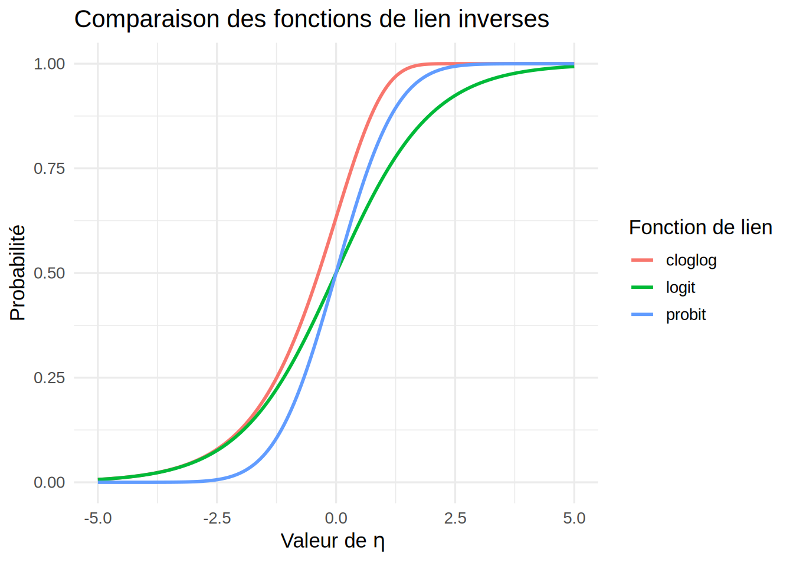
Le cas du lien logit — Interprétation
Avec le lien logit, le prédicteur linéaire s’écrit
\[ \eta_i = \log\left(\frac{\pi_i}{1-\pi_i}\right) \]
et donc,
\[ e^{\eta_i} = \frac{\pi_i}{1-\pi_i}. \]
Définition — Cote (odds)
Le rapport ci-dessus est la cote (odds), notée \(o_i\) :
\[ o_i = \frac{\pi_i}{1-\pi_i} = \frac{P(Y_i=1)}{P(Y_i=0)}. \]
La cote compare la probabilité que l’événement se produise (\(Y_i=1\)) à la probabilité qu’il ne se produise pas (\(Y_i=0\)). Par exemple :
si \(\pi_i = 0{,}5\), alors \(o_i = 1\) : l’événement a autant de chances d’arriver que de ne pas arriver ;
si \(\pi_i = 0{,}75\), alors \(o_i = 3\) : l’événement a 3 fois plus de chances de se produire que de ne pas se produire.
Passons à l’interprétation du coefficient \(\beta_j\). Dans le modèle,
\[ \eta_i = \beta_0 + \beta_1 x_{i1} + \cdots + \beta_j x_{ij} + \cdots \]
si \(x_{ij}\) augmente d’une unité (les autres variables restant fixes), \(\eta_i\) augmente de \(\beta_j\).
Propriété — Effet multiplicatif sur la cote
Comme \(o_i = e^{\eta_i}\), une augmentation d’une unité de \(x_{ij}\) (les autres variables restant fixes) multiplie la cote :
\[ o_i^{\text{nouveau}} = e^{\eta_i + \beta_j} = e^{\eta_i} \cdot e^{\beta_j} = o_i^{\text{ancien}} \cdot e^{\beta_j}. \]
Une augmentation d’une unité de \(x_{ij}\) multiplie donc la cote par \(e^{\beta_j}\). Ce facteur \(e^{\beta_j}\) s’appelle le rapport de cotes (odds ratio), et trois cas se présentent :
\(e^{\beta_j} > 1\) : augmenter \(x_{ij}\) augmente la cote (et donc \(P(Y_i=1)\)) ;
\(e^{\beta_j} < 1\) : augmenter \(x_{ij}\) diminue la cote ;
\(e^{\beta_j} = 1\) (c’est-à-dire \(\beta_j = 0\)) : la \(j^{\text{e}}\) variable explicative n’a pas d’effet sur la cote.
2.2 Inférence statistique
2.2.1 Estimation des paramètres \(\boldsymbol{\beta}\)
Comme on estime \(\boldsymbol\beta\) par maximum de vraisemblance, on part de la vraisemblance. Avec \(n\) variables observées \(Y_i \sim \mathrm{Bin}(m_i, \pi_i)\), la log-vraisemblance s’écrit
\[ \ell(\boldsymbol{\pi}; \boldsymbol{y}) = \sum_{i=1}^n \log\left[P(Y_i = y_i)\right] = \sum_{i=1}^n \left\{ \log\binom{m_i}{y_i} + y_i \log(\pi_i) + (m_i - y_i)\log(1-\pi_i) \right\}. \]
Cette fonction dépend de \(\boldsymbol\beta\) indirectement, par \(\pi_i\) (rappel de la section sur les fonctions de lien) :
\[ \pi_i = g^{-1}(\beta_0 + \beta_1 x_{i1} + \cdots + \beta_p x_{ip}), \]
où \(g^{-1}\) est l’inverse de la fonction de lien (la fonction logistique pour le lien logit).
Il est parfois plus commode de travailler avec \(\mu_i\), l’espérance de \(Y_i\) (donc \(\mu_i = m_i \pi_i\)), qu’avec \(\pi_i\). En substituant \(\pi_i = \mu_i/m_i\) dans la log-vraisemblance, on peut regrouper dans une constante \(K\) les termes qui ne dépendent pas de \(\boldsymbol\beta\) (dont \(\log\binom{m_i}{y_i}\)), ce qui donne la forme équivalente, plus simple,
\[ \ell(\boldsymbol{\mu}; \boldsymbol{y}) = \sum_{i=1}^n \left\{ y_i \log(\mu_i) + (m_i - y_i)\log(m_i - \mu_i) \right\} + K, \]
où \(\boldsymbol{\mu} = (\mu_1, \dots, \mu_n)^\top\). Comme \(K\) ne dépend pas de \(\boldsymbol\beta\), elle n’affecte pas la maximisation. C’est sous cette forme que le chapitre suivant fera reconnaître l’appartenance du modèle binomial à la famille exponentielle, et elle est aussi plus facile à utiliser pour le calcul de la déviance.
Le cas du lien logit — Log-vraisemblance
Avec le lien logit, \(\pi_i = \dfrac{e^{\eta_i}}{1+e^{\eta_i}}\) et \(1-\pi_i = \dfrac{1}{1+e^{\eta_i}}\), où
\[ \eta_i = \beta_0 + \beta_1 x_{i1} + \cdots + \beta_p x_{ip}. \]
Il vient alors
\[ \log(\pi_i) = \eta_i - \log(1+e^{\eta_i}), \qquad \log(1-\pi_i) = -\log(1+e^{\eta_i}), \]
de sorte que
\[ y_i \log(\pi_i) + (m_i - y_i)\log(1-\pi_i) = y_i \eta_i - m_i \log(1+e^{\eta_i}). \]
La log-vraisemblance s’écrit donc directement en fonction de \(\boldsymbol{\beta}\) :
\[ \ell(\boldsymbol{\beta}; \boldsymbol{y}) = \sum_{i=1}^n \left\{ \log\binom{m_i}{y_i} + y_i \eta_i - m_i \log\left(1+e^{\eta_i}\right) \right\}. \]
Définition — Score
Le score, noté \(\boldsymbol{U}(\boldsymbol{\beta})\), est le vecteur des dérivées partielles de la log-vraisemblance par rapport à \(\boldsymbol\beta\) :
\[ \boldsymbol{U}(\boldsymbol{\beta}) = \frac{\partial \ell(\boldsymbol{\beta};\boldsymbol y)}{\partial \boldsymbol\beta} = \left(\frac{\partial \ell}{\partial \beta_0}, \ldots, \frac{\partial \ell}{\partial \beta_p}\right)^\top. \]
L’estimateur du maximum de vraisemblance \(\hat{\boldsymbol\beta}\) est la solution de l’équation du score \(\boldsymbol U(\boldsymbol\beta) = \boldsymbol 0\), c’est-à-dire la valeur qui maximise \(\ell\). Contrairement à la régression linéaire, il n’y a pas de solution explicite (forme fermée), à cause de la non-linéarité de la fonction de lien \(g\). On résout donc l’équation numériquement, en général par l’algorithme des moindres carrés pondérés itératifs (IRLS, iteratively reweighted least squares). Cet algorithme est l’algorithme du score de Fisher (Fisher scoring) appliqué à ce problème. Avec le lien logit, il coïncide avec la méthode de Newton-Raphson.
Le cas du lien logit — Estimation
Commençons par la dérivée par rapport à \(\beta_j\). Il s’agit de dériver \(\ell(\boldsymbol{\beta}; \boldsymbol{y})\) terme à terme par rapport à \(\beta_j\) (\(j = 0, 1, \dots, p\)), en utilisant \(\dfrac{\partial \eta_i}{\partial \beta_j} = x_{ij}\) (avec \(x_{i0} \equiv 1\) pour l’ordonnée à l’origine).
Le terme \(\log\binom{m_i}{y_i}\) ne dépend pas de \(\boldsymbol{\beta}\), donc sa dérivée est nulle. Pour le terme \(y_i \eta_i\) :
\[ \frac{\partial}{\partial \beta_j}\left( y_i \eta_i \right) = y_i x_{ij}. \]
Le terme \(m_i \log(1+e^{\eta_i})\) se dérive en chaîne :
\[ \frac{\partial}{\partial \beta_j} \log\left(1+e^{\eta_i}\right) = \frac{e^{\eta_i}}{1+e^{\eta_i}} \cdot \frac{\partial \eta_i}{\partial \beta_j} = \pi_i x_{ij}, \]
d’où
\[ \frac{\partial}{\partial \beta_j}\left( m_i \log(1+e^{\eta_i}) \right) = m_i \pi_i x_{ij}. \]
En combinant les trois termes, on obtient
\[ \frac{\partial \ell(\boldsymbol{\beta}; \boldsymbol{y})}{\partial \beta_j} = \sum_{i=1}^n \left( y_i - m_i \pi_i \right) x_{ij}. \tag{2.1}\]
Passons à la forme matricielle (lien logit). Notons \(\boldsymbol{X}\) la matrice de design (\(n \times (p+1)\)), \(\boldsymbol{y} = (y_1, \dots, y_n)^\top\) et \(\boldsymbol{\mu} = (m_1\pi_1, \dots, m_n\pi_n)^\top\). Le score s’écrit alors
\[ \boldsymbol{U}(\boldsymbol{\beta}) = \boldsymbol{X}^\top (\boldsymbol{y} - \boldsymbol{\mu}). \tag{2.2}\]
2.2.2 Séparation des données
Il arrive que l’estimateur du maximum de vraisemblance n’existe pas, ce qui se produit quand les covariables séparent parfaitement les deux groupes.
Définition — Séparation complète et quasi complète
Il y a séparation complète si un hyperplan classe parfaitement les \(Y_i\) à partir des covariables, c’est-à-dire s’il existe \(\boldsymbol\beta\) tel que \(\boldsymbol{X}_i^\top\boldsymbol\beta > 0\) chaque fois que \(Y_i=1\) et \(\boldsymbol{X}_i^\top\boldsymbol\beta < 0\) chaque fois que \(Y_i=0\) (ou l’inverse).
Il y a séparation quasi complète quand cette séparation est presque parfaite : un hyperplan classe alors correctement toutes les observations, sauf un sous-ensemble où \(\boldsymbol{X}_i^\top\boldsymbol\beta = 0\) exactement.
Remarque — Intuition géométrique : une pente qui explose
Avec un seul prédicteur continu et le lien logit, \(\hat\pi(x) = g^{-1}(\hat\beta_0 + \hat\beta_1 x)\), dont la pente est
\[ \hat\pi'(x) = \hat\beta_1\, \hat\pi(x)\{1-\hat\pi(x)\}, \]
maximale au point d’inflexion (\(\hat\pi(x)=1/2\)), où elle vaut \(\hat\beta_1/4\). Sous séparation, l’algorithme pousse \(|\hat\beta_1| \to \infty\) pour continuer à augmenter la vraisemblance, de sorte que la pente maximale de la courbe augmente elle aussi. La sigmoïde devient de plus en plus abrupte et se rapproche d’une fonction en escalier (0 d’un côté du seuil de séparation, 1 de l’autre). Mais aucune sigmoïde à pente finie ne reproduit ce saut, et c’est pour cela que l’algorithme ne converge pas, plutôt que de donner une pente infinie.
Avec plusieurs covariables, l’image est la même, et l’hyperplan séparateur devient une frontière nette (les probabilités prédites tendent vers 0 ou 1 de chaque côté). Mais « la pente » n’est plus un scalaire : c’est la norme \(\|\hat{\boldsymbol\beta}\|\) dans la direction séparatrice qui diverge.
En présence de séparation (complète ou quasi complète), l’estimateur du maximum de vraisemblance \(\hat{\boldsymbol\beta}\) n’existe pas au sens usuel. La vraisemblance continue d’augmenter quand \(\|\boldsymbol\beta\| \to \infty\) dans la direction qui sépare les données, sans jamais atteindre de maximum fini. En pratique, l’algorithme IRLS ne converge pas, ou alors il converge vers des \(\hat\beta_j\) énormes, limités seulement par son critère d’arrêt.
R signale souvent le problème par l’avertissement
Warning: glm.fit: fitted probabilities numerically 0 or 1 occurredaccompagné de coefficients estimés énormes en valeur absolue et d’erreurs-types démesurées (souvent plus grandes que le coefficient lui-même de plusieurs ordres de grandeur).
Exemple — Illustration de la séparation complète
On génère 10 observations autour de \(-2{,}5\) avec \(y=0\) et 10 autour de \(2{,}5\) avec \(y=1\). Avec cette graine, les deux groupes ne se chevauchent pas (séparation complète). On ajuste ensuite la régression logistique.
set.seed(2)
x <- c(rnorm(10, mean = -2.5), rnorm(10, mean = 2.5))
y <- c(rep(0, 10), rep(1, 10)) # y=0 pour le premier groupe, y=1 pour le second ;
# avec cette graine, les deux groupes ne se chevauchent pas
modele_separe <- glm(y ~ x, family = binomial)Warning: glm.fit: algorithm did not convergeWarning: glm.fit: fitted probabilities numerically 0 or 1 occurredsummary(modele_separe)$coefficients Estimate Std. Error z value Pr(>|z|)
(Intercept) 9.924497 19989.53 0.0004964849 0.9996039
x 60.320086 50086.41 0.0012043204 0.9990391grille_x <- data.frame(x = seq(min(x), max(x), length.out = 200))
grille_x$p_hat <- predict(modele_separe, newdata = grille_x, type = "response")
plot(x, y, pch = 19, ylim = c(0, 1))
lines(grille_x$x, grille_x$p_hat, col = "blue", lwd = 2)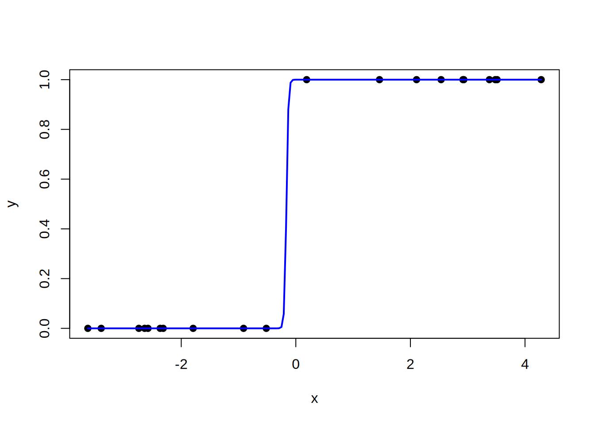
La courbe \(\hat\pi(x)\) ressemble à une fonction en escalier plutôt qu’à une sigmoïde, puisqu’elle passe de 0 à 1 sur un intervalle minuscule autour du seuil de séparation. Ici, n’importe quel seuil entre \(-0{,}52\) et \(0{,}19\) sépare les deux groupes, et la courbe ajustée passe à \(1/2\) vers \(x \approx -0{,}16\). C’est parce que la pente \(\hat\beta_1/4\) diverge sous séparation complète.
Le coefficient de x et son erreur-type sont tous deux énormes, ce qui signale une séparation et non un effet réel de cette taille.
Remarque — Que faire en cas de séparation?
Sous séparation (complète ou quasi complète), aucune méthode d’inférence fondée sur l’estimateur du maximum de vraisemblance ordinaire ne règle le problème, puisque cet estimateur n’est pas fini. Changer de test ou d’intervalle (Wald, rapport de vraisemblance, vraisemblance profilée) ne suffit donc pas : il faut changer d’estimateur ou de données. Cinq approches sont courantes :
- régression logistique pénalisée (correction de Firth) : une pénalité est ajoutée à la vraisemblance (
logistfen R), ce qui garantit un estimateur fini même sous séparation ; - approche bayésienne : une loi a priori faiblement informative sur les coefficients (par exemple avec
arm::bayesglm) joue le même rôle qu’une pénalité et donne aussi des estimations finies ; - retrait ou regroupement de la variable en cause : si une variable catégorielle cause la séparation, la catégorie fautive peut être fusionnée avec une catégorie voisine ;
- régularisation (ridge, lasso, Chapitre 6) : les coefficients sont contraints, ce qui les empêche de diverger ;
- collecte de données : si la séparation vient d’un petit échantillon et non d’une relation déterministe, un échantillon plus grand peut la faire disparaître.
Notez que la séparation a aussi une conséquence sur l’inférence avant même d’être atteinte : les tests de Wald deviennent peu fiables quand les données sont presque séparées, sans séparation au sens strict (voir le phénomène de Hauck-Donner plus loin).
2.2.3 Information de Fisher et variance des estimateurs
La variance de \(\hb\) s’obtient à partir de la matrice d’information de Fisher \(\boldsymbol{I}\), dont l’élément \((j+1,k+1)\) est
\[ I_{jk} = -\left.\frac{\partial^2 \ell}{\partial \beta_j \partial \beta_k}\right|_{\hat{\boldsymbol{\beta}}}. \]
Il s’agit de l’information observée. Avec le lien logit, elle coïncide avec l’information attendue \(\boldsymbol{X}^\top\boldsymbol{W}\boldsymbol{X}\) donnée plus bas. Pour un autre lien, les deux diffèrent ; R utilise l’information attendue, et c’est elle qu’on note \(\boldsymbol{I}\) dans la suite.
La matrice de variance-covariance de \(\hb\) est estimée par
\[ \hv{\hb} = \boldsymbol{I}^{-1}, \]
et la loi asymptotique de \(\hb\) est approchée par
\[ \hb \;\overset{\cdot}{\sim}\; \mathcal{N}\{\bb,\, \hv{\hb} \}. \]
\(\overset{\cdot}{\sim}\)
La notation \(\overset{\cdot}{\sim}\) signifie que la variable aléatoire suit approximativement la loi indiquée, de façon asymptotique. Ici, sous des conditions de régularité, \(\hb\) est asymptotiquement normal quand l’information totale croît, par exemple quand \(n\to\infty\) : la loi de \(\hb\) converge en distribution vers la loi normale indiquée.On note \(\hv{\hbj{j}}=[\hv{\hb}]_{j+1,j+1}\) la variance estimée de \(\hbj{j}\).
Dans le cas binomial, on montre que
\[ \hv{\hb} = (\boldsymbol{X}^\top \boldsymbol{W} \boldsymbol{X})^{-1}, \]
où \(\boldsymbol{W}\) est une matrice diagonale d’entrées
\[ w_i = \frac{(\partial\mu_i/\partial\eta_i)^2}{Var[Y_i]} = \frac{m_i\,\{(g^{-1})'(\heta{i})\}^2}{\hpi{i}(1-\hpi{i})}, \]
avec
\[ \hmu{i} = m_i \hpi{i} = m_i\, g^{-1}(\hbj{0} + \hbj{1} x_{i1} + \cdots + \hbj{p} x_{ip}). \]
Le cas du lien logit — Expression de \(w_i\)
Avec le lien logit, \(\hpi{i} = \dfrac{e^{\heta{i}}}{1+e^{\heta{i}}}\), où \(\heta{i} = \hbj{0} + \hbj{1} x_{i1} + \cdots + \hbj{p} x_{ip}\). Comme \((g^{-1})'(\eta) = \pi(1-\pi)\), l’entrée \(w_i\) se simplifie en
\[ w_i = m_i\, \hpi{i}(1-\hpi{i}) = \frac{\hmu{i}(m_i - \hmu{i})}{m_i}. \]
Exemple — Jeu de données empress_agrege : comparaison des liens
On ajuste le modèle avec les trois fonctions de lien et classe_num comme seule variable explicative. On regarde d’abord les proportions observées de survivants par classe.
empress_obs <- empress_agrege |>
mutate(prop_observee = survivants / effectif)
ggplot() +
geom_point(
data = empress_obs,
aes(x = classe_num, y = prop_observee, size = effectif),
color = "black",
alpha = 0.6
) +
labs(
x = "Classe (1 = première, 2 = deuxième, 3 = troisième)",
y = "Proportion de survivants",
color = "Fonction de lien",
size = "Effectif du groupe",
title = "Proportion de survivants selon la classe"
) +
theme_minimal(base_size = 13)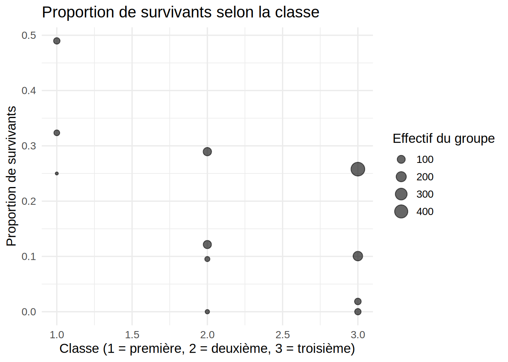
modele_agrege_classe_logit <- glm(
cbind(survivants, effectif - survivants) ~ classe_num,
data = empress_agrege,
family = binomial(link = "logit")
)
modele_agrege_classe_probit <- glm(
cbind(survivants, effectif - survivants) ~ classe_num,
data = empress_agrege,
family = binomial(link = "probit")
)
modele_agrege_classe_cloglog <- glm(
cbind(survivants, effectif - survivants) ~ classe_num,
data = empress_agrege,
family = binomial(link = "cloglog")
)
summary(modele_agrege_classe_logit)$coefficients Estimate Std. Error z value Pr(>|z|)
(Intercept) -0.2727075 0.2876705 -0.9479859 0.34313662
classe_num -0.4245292 0.1110337 -3.8234261 0.00013161summary(modele_agrege_classe_probit)$coefficients Estimate Std. Error z value Pr(>|z|)
(Intercept) -0.1993538 0.17249544 -1.155705 0.2478020066
classe_num -0.2437527 0.06568542 -3.710911 0.0002065147summary(modele_agrege_classe_cloglog)$coefficients Estimate Std. Error z value Pr(>|z|)
(Intercept) -0.5073411 0.24167756 -2.099248 3.579504e-02
classe_num -0.3798464 0.09480604 -4.006563 6.160872e-05La colonne Std. Error de summary() donne les erreurs-types estimées des coefficients, comme en régression linéaire. Traçons ensuite les probabilités prédites des trois modèles.
grille <- data.frame(
classe_num = seq(min(empress_agrege$classe_num), max(empress_agrege$classe_num), length.out = 200)
)
predire_modele <- function(modele, nom_lien) {
grille |>
mutate(
p_hat = predict(modele, newdata = grille, type = "response"),
lien = nom_lien
)
}
predictions <- bind_rows(
predire_modele(modele_agrege_classe_logit, "Logit"),
predire_modele(modele_agrege_classe_probit, "Probit"),
predire_modele(modele_agrege_classe_cloglog, "Cloglog")
)
empress_obs <- empress_agrege |>
mutate(prop_observee = survivants / effectif)
ggplot() +
geom_point(
data = empress_obs,
aes(x = classe_num, y = prop_observee, size = effectif),
color = "black",
alpha = 0.6
) +
geom_line(
data = predictions,
aes(x = classe_num, y = p_hat, color = lien),
linewidth = 1
) +
labs(
x = "Classe (1 = première, 2 = deuxième, 3 = troisième)",
y = "Probabilité de survie estimée",
color = "Fonction de lien",
size = "Effectif du groupe",
title = "Comparaison des fonctions de lien logit, probit et cloglog"
) +
theme_minimal(base_size = 13)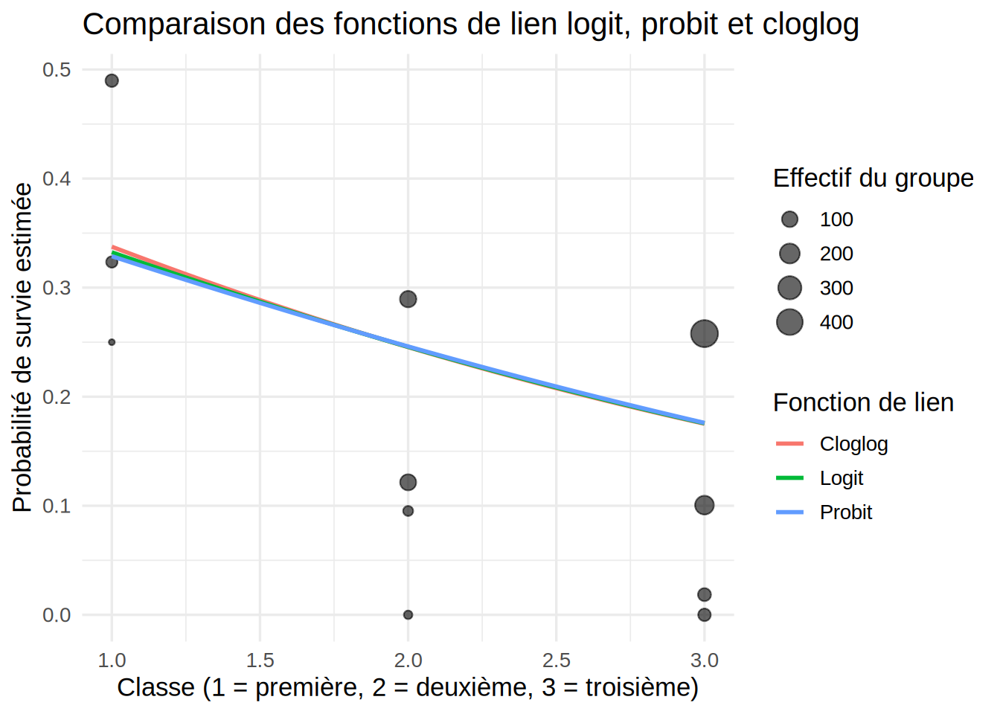
Pour les trois liens, la valeur-p associée à classe_num (environ \(1{,}3\times10^{-4}\) pour le logit, \(2{,}1\times10^{-4}\) pour le probit et \(6{,}2\times10^{-5}\) pour le cloglog) est bien sous le seuil de 5%. On rejette donc \(H_0:\beta_1=0\) dans les trois cas : l’effet de la classe est significatif quel que soit le lien.
Les trois liens donnent le même sens d’effet (plus le numéro de classe est élevé, plus la probabilité de survie est faible). Les courbes de probabilité prédite \(\hat\pi\) sont aussi presque confondues, c’est-à-dire qu’à classe_num fixé, les probabilités prédites diffèrent de moins de 1 point de pourcentage d’un lien à l’autre.
2.2.4 Intervalles de confiance pour les \(\beta_j\)
Les intervalles de confiance et les tests sur les \(\beta_j\) se construisent par la méthode de Wald, à partir de la loi asymptotique de \(\hb\). Un intervalle de confiance de niveau \((1-\alpha)\) pour \(\beta_j\) est \[\left[\hat\beta_j - z_{\alpha/2}\sqrt{\hv{\hbj{j}}}\,;\ \hat\beta_j + z_{\alpha/2}\sqrt{\hv{\hbj{j}}}\right],\] où \(z_\gamma\) est le quantile de la \(\mathcal{N}(0,1)\) défini par \(P(Z > z_\gamma) = \gamma\).
Pour tester \(H_0: \beta_j = 0\) contre \(H_1: \beta_j\neq 0\), on rejette \(H_0\) au seuil \(\alpha\) si \(|z_{obs}| > z_{\alpha/2}\), avec \(z_{obs} = \hat\beta_j/\sqrt{\hv{\hbj{j}}}\). La valeur-p est \(2P(Z > |z_{obs}|)\).
Exemple — Intervalle de confiance pour \(\beta_1\) dans l’exemple empress_agrege
Avec le lien logit, on construit un intervalle de confiance de niveau 95% pour \(\beta_1\) (l’effet de classe_num) à partir de la sortie de summary() :
summary(modele_agrege_classe_logit)$coefficients Estimate Std. Error z value Pr(>|z|)
(Intercept) -0.2727075 0.2876705 -0.9479859 0.34313662
classe_num -0.4245292 0.1110337 -3.8234261 0.00013161L’intervalle est \([\hbj{1}-1{,}96\times \sqrt{\hv{\hbj{1}}}\,;\ \hbj{1}+1{,}96\times \sqrt{\hv{\hbj{1}}}]=[-0{,}6422\,;\ -0{,}2069]\).
R le calcule aussi directement :
confint(modele_agrege_classe_logit)Waiting for profiling to be done... 2.5 % 97.5 %
(Intercept) -0.8459280 0.2838251
classe_num -0.6409082 -0.2050072Notez que les deux intervalles ne sont pas identiques.
Remarque — Intervalle de Wald ou intervalle par vraisemblance profilée?
Il ne faut pas voir confint(modele) comme le calcul de l’intervalle de Wald. Appliquée à un objet glm, cette fonction calcule plutôt un intervalle par vraisemblance profilée (profile likelihood). Cette méthode ne suppose pas une log-vraisemblance parabolique (symétrique) autour de \(\hat\beta_j\). Elle parcourt sa vraie courbe en faisant varier \(\beta_j\) (en réoptimisant les autres paramètres à chaque valeur), puis inverse le test du rapport de vraisemblance pour trouver les bornes. L’intervalle obtenu n’est donc en général pas symétrique autour de \(\hat\beta_j\), contrairement à celui de Wald, qui s’obtient avec confint.default(modele).
confint.default(modele_agrege_classe_logit) 2.5 % 97.5 %
(Intercept) -0.8365313 0.2911162
classe_num -0.6421512 -0.2069071Les deux méthodes donnent des résultats semblables avec un grand échantillon et des coefficients modérés. Dans de nombreux cas, l’intervalle par vraisemblance profilée est préférable, parce qu’il ne dépend pas de la courbure locale en \(\hat\beta_j\). Comme le test du rapport de vraisemblance, il n’est pas touché par le phénomène de Hauck-Donner décrit plus bas, et il se comporte mieux avec des données presque séparées et de petits échantillons. Dans ces situations, l’intervalle de Wald peut devenir trompeur : il est alors trop large, au point de contenir 0 alors que l’effet est réel. L’intervalle de Wald garde son utilité pour l’intuition et les calculs à la main. Pour les résultats rapportés, je vous conseille plutôt l’intervalle par vraisemblance profilée.
Notez toutefois que la vraisemblance profilée n’est pas un remède à la séparation. Sous séparation complète ou quasi complète, l’estimateur du maximum de vraisemblance n’est pas fini, au moins une borne de l’intervalle est infinie et confint() peut échouer. Il faut alors changer d’estimateur (voir la remarque « Que faire en cas de séparation? »).
Pour aller plus loin avec la théorie — Construction de l’intervalle par vraisemblance profilée
On définit d’abord la log-vraisemblance profilée de \(\beta_j\) : pour chaque valeur fixée de \(\beta_j\), on maximise la log-vraisemblance sur les autres paramètres \(\boldsymbol\beta_{-j}\) :
\[ \ell_p(\beta_j) = \max_{\boldsymbol\beta_{-j}} \ell(\beta_j, \boldsymbol\beta_{-j}). \]
Les bornes \((\beta_j^{L}, \beta_j^{U})\) de l’intervalle de niveau \((1-\alpha)\) sont les deux solutions de l’équation
\[ 2\left[\ell(\hat{\boldsymbol\beta}) - \ell_p(\beta_j)\right] = \chi^2_{1,\alpha}. \]
L’équation est non linéaire en \(\beta_j\) (chaque évaluation de \(\ell_p\) demande une optimisation), de sorte qu’elle n’a pas de solution explicite, sauf cas particuliers : contrairement à l’intervalle de Wald, cet intervalle n’a pas de forme fermée.
Cas particulier avec forme fermée : en régression linéaire avec erreurs normales et variance \(\sigma^2\) connue, la log-vraisemblance est exactement quadratique en \(\boldsymbol\beta\), si bien que la vraisemblance profilée coïncide avec l’approximation de Wald et que les deux intervalles sont identiques. Ce n’est plus vrai dès qu’on sort de ce cadre, comme en régression logistique. Même en régression linéaire, si \(\sigma^2\) est estimée, \(\ell_p(\beta_j)\) n’est plus quadratique et l’équation ci-dessus ne redonne pas exactement l’intervalle de Student.
Résolution en pratique : confint() appliqué à un objet glm (fonction de la librairie stats depuis R 4.4, auparavant fournie par MASS) calcule \(\ell_p(\beta_j)\) sur une grille de valeurs de \(\beta_j\) autour de \(\hat\beta_j\). Il réajuste le modèle (les autres paramètres libres) à chaque valeur, d’où le message « Waiting for profiling to be done… ». Les points sont ensuite interpolés par une spline, et on obtient les bornes par recherche de racine sur cette interpolation, plutôt que par résolution directe de l’équation ci-dessus.
Remarque — Le phénomène de Hauck-Donner
Le test de Wald pour \(H_0 : \beta_j = 0\) repose sur la statistique
\[ z_{obs} = \frac{\hat\beta_j}{\sqrt{\hv{\hbj{j}}}}, \]
où l’erreur-type vient de la courbure de la log-vraisemblance évaluée en \(\hat\beta_j\), et non sous \(H_0\). Cette dépendance locale a un effet contre-intuitif : si \(|\hat\beta_j|\) devient grand (par exemple sous séparation, complète ou quasi complète, ou pour un effet fort), la log-vraisemblance s’aplatit en \(\hat\beta_j\). L’erreur-type \(\sqrt{\hv{\hbj{j}}}\) gonfle alors, ce qui peut faire diminuer \(z_{obs}\), et l’effet paraît non significatif alors qu’il l’est. On peut montrer que cela vient de ce que l’erreur-type croît plus vite que la valeur absolue de l’estimation.
Ce phénomène, documenté par Hauck et Donner (1977), ne touche pas le test du rapport de vraisemblance, qui compare directement la vraisemblance en \(\hat\beta_j\) à celle en \(0\), au lieu de s’appuyer sur une approximation locale :
\[ G^2 = -2\left[\ell(\text{modèle réduit}) - \ell(\text{modèle complet})\right] \;\overset{\cdot}{\sim}\; \chi^2_1 \quad \text{sous } H_0. \]
En pratique, la plupart des fonctions de R affichent par défaut le test de Wald, qui coûte moins de calcul et qui est fiable avec un grand échantillon. Méfiez-vous d’un grand coefficient accompagné d’une valeur-p de Wald étonnamment élevée : dans ce cas, comparez avec anova(modele_reduit, modele_complet, test = "Chisq") avant de conclure à la non-significativité.
Exemple — Effet Hauck-Donner
On étudie le phénomène par simulation (Chapitre 1) : on génère des données logistiques avec un effet \(\beta_1\) de plus en plus grand, puis on compare les deux statistiques de test sur chaque jeu de données. La fonction simuler_logistique sert aussi plus bas dans cet exemple.
simuler_logistique <- function(n, beta0 = 0, beta1 = 1) {
x <- rnorm(n, mean = 0, sd = 1)
eta <- beta0 + beta1 * x
p <- plogis(eta) # équivalent à 1 / (1 + exp(-eta))
y <- rbinom(n, size = 1, prob = p)
data.frame(x = x, y = y)
}
set.seed(123)
n <- 200
valeurs_beta1 <- seq(0.5, 15, by = 0.5) # vrai effet croissant (effet de plus en plus fort)
resultats <- map_dfr(valeurs_beta1, function(b1) {
dat <- simuler_logistique(n, beta0 = 0, beta1 = b1)
mod_complet <- glm(y ~ x, data = dat, family = binomial)
mod_reduit <- glm(y ~ 1, data = dat, family = binomial)
beta_hat <- coef(mod_complet)["x"]
et_hat <- summary(mod_complet)$coefficients["x", "Std. Error"]
wald_chisq <- (beta_hat / et_hat)^2
lr_chisq <- as.numeric(2 * (logLik(mod_complet) - logLik(mod_reduit)))
data.frame(
beta1_vrai = b1,
beta_hat = beta_hat,
wald_chisq = wald_chisq,
lr_chisq = lr_chisq
)
})
resultats |>
tidyr::pivot_longer(
c(wald_chisq, lr_chisq),
names_to = "test",
values_to = "statistique"
) |>
mutate(
test = recode(
test,
wald_chisq = "Wald (khi-deux)",
lr_chisq = "Rapport de vraisemblance"
)
) |>
ggplot(aes(x = beta_hat, y = statistique, color = test)) +
geom_line(linewidth = 1) +
labs(
x = expression(hat(beta)[x]),
y = "Statistique de test (échelle khi-deux, 1 ddl)",
color = NULL,
title = "Effet Hauck-Donner avec un prédicteur continu"
) +
theme_minimal(base_size = 13)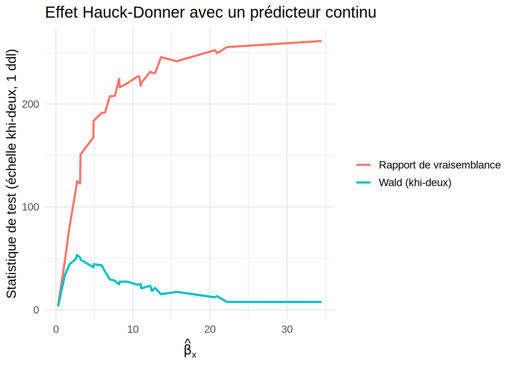
On compare maintenant les sorties des deux tests sur deux jeux de données de taille \(n = 50\) : un cas « normal » (\(\beta_1 = 5\), pas de séparation) et un cas presque séparé (\(\beta_1 = 15\) : une seule paire d’observations se chevauche) :
# Cas 1 : beta1 = 5, pas de séparation
set.seed(123)
dat_normal <- simuler_logistique(n = 50, beta0 = 0, beta1 = 5)
# Cas 2 : beta1 = 15, données presque séparées
set.seed(1234)
dat_separe <- simuler_logistique(n = 50, beta0 = 0, beta1 = 15)
par(mfrow = c(1, 2))
plot(dat_normal$x, dat_normal$y, xlab = "x", ylab = "y", main = expression(beta[1] == 5))
plot(dat_separe$x, dat_separe$y, xlab = "x", ylab = "y", main = expression(beta[1] == 15))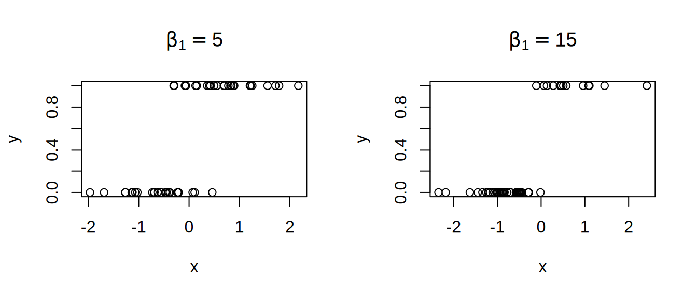
mod_normal <- glm(y ~ x, data = dat_normal, family = binomial)
summary(mod_normal)$coefficients Estimate Std. Error z value Pr(>|z|)
(Intercept) 0.1083352 0.5187463 0.2088405 0.834572762
x 4.7939867 1.4068959 3.4074921 0.000655628mod_separe <- glm(y ~ x, data = dat_separe, family = binomial)
summary(mod_separe)$coefficients Estimate Std. Error z value Pr(>|z|)
(Intercept) 1.028036 1.301805 0.7897003 0.4297028
x 14.144188 7.929599 1.7837205 0.0744691Dans le cas normal, la valeur-p de Wald pour x est d’environ \(6{,}56\times10^{-4}\), sous le seuil de 5%, de sorte qu’on rejette \(H_0:\beta_1=0\), comme prévu puisque l’effet simulé est réel. Dans le cas presque séparé, elle grimpe à environ \(0{,}074\), au-dessus du seuil : le test de Wald ne rejette pas \(H_0\), alors que l’effet simulé est trois fois plus fort (\(\beta_1=15\) contre \(\beta_1=5\)). C’est le phénomène de Hauck-Donner : le test de Wald devient trompeur quand l’effet est très fort ou que les données sont presque séparées.
Voici les valeurs-p des tests du rapport de vraisemblance pour les deux cas :
mod_normal_reduit <- glm(y ~ 1, data = dat_normal, family = binomial)
anova(mod_normal_reduit, mod_normal, test = "Chisq")Analysis of Deviance Table
Model 1: y ~ 1
Model 2: y ~ x
Resid. Df Resid. Dev Df Deviance Pr(>Chi)
1 49 69.315
2 48 25.222 1 44.093 3.131e-11 ***
---
Signif. codes: 0 '***' 0.001 '**' 0.01 '*' 0.05 '.' 0.1 ' ' 1mod_separe_reduit <- glm(y ~ 1, data = dat_separe, family = binomial)
anova(mod_separe_reduit, mod_separe, test = "Chisq")Analysis of Deviance Table
Model 1: y ~ 1
Model 2: y ~ x
Resid. Df Resid. Dev Df Deviance Pr(>Chi)
1 49 57.306
2 48 4.990 1 52.316 4.725e-13 ***
---
Signif. codes: 0 '***' 0.001 '**' 0.01 '*' 0.05 '.' 0.1 ' ' 1Par contre, le test du rapport de vraisemblance rejette \(H_0\) dans les deux cas au seuil de 5%, avec une valeur-p \(\approx 3{,}13\times10^{-11}\) pour le cas normal et une valeur-p \(\approx 4{,}72\times10^{-13}\) pour le cas presque séparé, toutes deux bien sous \(0{,}05\). Il détecte donc l’effet même quand les données sont presque séparées, là où le test de Wald échoue.
2.2.5 Test du score (Rao)
Le test de Wald n’utilise que le modèle complet, et le test du rapport de vraisemblance utilise les deux modèles. Le troisième test classique fondé sur la vraisemblance, le test du score (de Rao, aussi appelé test des multiplicateurs de Lagrange), n’utilise que le modèle réduit.
Définition — Test du score
Partageons \(\boldsymbol\beta = (\boldsymbol\beta_1^\top, \boldsymbol\beta_2^\top)^\top\), où \(\boldsymbol\beta_2\) regroupe les \(d\) coefficients testés, et notons \(\tilde{\boldsymbol\beta}\) l’estimateur du maximum de vraisemblance sous \(H_0 : \boldsymbol\beta_2 = \boldsymbol 0\) (les coefficients du modèle réduit, complétés par des zéros). La statistique du score est
\[ S = \boldsymbol U(\tilde{\boldsymbol\beta})^\top\, \boldsymbol I(\tilde{\boldsymbol\beta})^{-1}\, \boldsymbol U(\tilde{\boldsymbol\beta}) \;\overset{\cdot}{\sim}\; \chi^2_d \quad \text{sous } H_0, \]
où \(\boldsymbol U\) est le score du modèle complet (Équation 2.2) et \(\boldsymbol I\) son information de Fisher. Les composantes de \(\boldsymbol U(\tilde{\boldsymbol\beta})\) associées à \(\boldsymbol\beta_1\) sont nulles, puisque ce sont les équations du modèle réduit : seules celles de \(\boldsymbol\beta_2\) contribuent.
Les trois tests regardent la même log-vraisemblance de trois façons. Le test de Wald mesure l’écart horizontal entre \(\hat\beta_j\) et la valeur nulle, à l’aide de la courbure en \(\hat\beta_j\). Le test du rapport de vraisemblance mesure l’écart vertical entre les deux maximums. Le test du score mesure la pente de la log-vraisemblance à la valeur nulle : si \(H_0\) est vraie, cette pente devrait être proche de 0. Comme il est évalué sous \(H_0\), le test du score n’est pas touché par le phénomène de Hauck-Donner. Il se calcule aussi quand le modèle complet est difficile à ajuster, par exemple sous séparation, où \(\hat{\boldsymbol\beta}\) n’est pas fini. En R, anova(modele_reduit, modele_complet, test = "Rao") le calcule.
Voici les valeurs-p des trois tests sur les deux jeux de données simulés de l’exemple précédent :
trois_tests <- function(reduit, complet) {
c(Wald = summary(complet)$coefficients["x", "Pr(>|z|)"],
RV = anova(reduit, complet, test = "Chisq")[2, "Pr(>Chi)"],
Score = anova(reduit, complet, test = "Rao")[2, "Pr(>Chi)"])
}
tests_hd <- rbind(normal = trois_tests(mod_normal_reduit, mod_normal),
presque_separe = trois_tests(mod_separe_reduit, mod_separe))
tests_hd Wald RV Score
normal 0.000655628 3.131180e-11 7.460944e-08
presque_separe 0.074469098 4.724647e-13 2.060330e-08Dans le cas presque séparé, le test du score rejette \(H_0\) comme le test du rapport de vraisemblance (valeur-p \(\approx 2{,}06\times10^{-8}\)), alors que le test de Wald ne la rejette pas.
Le tableau suivant résume les méthodes d’inférence sur \(\beta_j\) vues dans cette section. Dans tous les cas, on suppose le modèle bien spécifié et les observations indépendantes, et les méthodes reposent sur une approximation asymptotique.
| Méthode | Statistique ou intervalle | Approximation utilisée | Limites |
|---|---|---|---|
| Wald | \(z_{obs}=\hat\beta_j/\sqrt{\hv{\hbj{j}}}\) et \(\hat\beta_j \pm z_{\alpha/2}\sqrt{\hv{\hbj{j}}}\) | \(\hb \overset{\cdot}{\sim} \mathcal{N}\{\bb,\, \hv{\hb}\}\), avec la courbure évaluée en \(\hat\beta_j\) | phénomène de Hauck-Donner ; peu fiable avec des données presque séparées ou un petit échantillon |
| Rapport de vraisemblance | \(G^2 = -2\left[\ell(\text{modèle réduit}) - \ell(\text{modèle complet})\right]\) | \(G^2 \overset{\cdot}{\sim} \chi^2_1\) sous \(H_0\) | demande d’ajuster les deux modèles ; ne rend pas l’estimateur fini sous séparation |
| Score (Rao) | \(S = \boldsymbol U(\tilde{\boldsymbol\beta})^\top \boldsymbol I(\tilde{\boldsymbol\beta})^{-1}\boldsymbol U(\tilde{\boldsymbol\beta})\), évaluée sous \(H_0\) | \(S \overset{\cdot}{\sim} \chi^2_1\) sous \(H_0\) | ne demande que le modèle réduit ; ne donne pas d’estimation de \(\beta_j\) |
| Vraisemblance profilée | bornes telles que \(2\left[\ell(\hat{\boldsymbol\beta}) - \ell_p(\beta_j)\right] = \chi^2_{1,\alpha}\) | celle du rapport de vraisemblance | calcul itératif ; au moins une borne infinie sous séparation |
2.2.6 Intervalle de confiance pour une probabilité prédite
Étant donné \(\boldsymbol{X}^* = (1, x_1^*,\ldots,x_p^*)^\top\), on estime \(\pi^*\) par \(\hat\pi^* = g^{-1}({\boldsymbol{X}^*}^\top\hb)\), et on construit un intervalle de confiance pour \(\pi^*\) de deux façons :
transformation de l’intervalle sur \(\eta^*\) : un IC pour \(\eta^* = {\boldsymbol{X}^*}^\top\bb\) est \[\left[{\boldsymbol{X}^*}^\top\hb \pm z_{\alpha/2}\sqrt{\hv{{\boldsymbol{X}^*}^\top\hb}}\right], \qquad \hv{{\boldsymbol{X}^*}^\top\hb} = {\boldsymbol{X}^*}^\top \hv{\hb}\, \boldsymbol{X}^*,\] et il suffit d’appliquer \(g^{-1}\) aux deux bornes. Cet intervalle reste toujours dans \([0,1]\) ;
méthode du delta : \(\hv{\hat\pi^*} = h({\boldsymbol{X}^*}^\top\hb)\, \hv{{\boldsymbol{X}^*}^\top\hb}\) avec \(h(u) = \{\partial g^{-1}(u)/\partial u\}^2\), d’où l’IC approximatif \(\left[\hat\pi^* \pm z_{\alpha/2}\sqrt{\hv{\hat\pi^*}}\right]\).
En pratique, les deux méthodes donnent des résultats semblables.
Exemple — IC pour la probabilité de survie en deuxième classe — empress_agrege
On reprend le modèle modele_agrege_classe_logit (classe_num seulement) pour calculer un intervalle de confiance à 95% pour la probabilité de survie d’un passager de deuxième classe, soit \(\boldsymbol{X}^* = (1, 2)^\top\).
X_etoile <- data.frame(classe_num = 2)
# Prédiction sur l'échelle du prédicteur linéaire, avec erreur-type
eta_etoile <- predict(modele_agrege_classe_logit, newdata = X_etoile, type = "link", se.fit = TRUE)
eta_etoile$fit 1
-1.121766 eta_etoile$se.fit[1] 0.09448949z <- qnorm(0.975)
# Approche 1 : transformation des bornes sur eta*
bornes_eta <- eta_etoile$fit + c(-1, 1) * z * eta_etoile$se.fit
ic_transform <- plogis(bornes_eta)
ic_transform[1] 0.2129957 0.2815937# Approche 2 : méthode du delta
pi_etoile <- plogis(eta_etoile$fit)
h <- (pi_etoile * (1 - pi_etoile))^2
se_pi <- sqrt(h * eta_etoile$se.fit^2)
ic_delta <- pi_etoile + c(-1, 1) * z * se_pi
ic_delta[1] 0.2113627 0.2800050Pour un passager de deuxième classe, la probabilité de survie estimée est \(\hat\pi^* \approx 0{,}246\). L’intervalle par transformation est \([0{,}213\,;\,0{,}282]\) et celui par la méthode du delta \([0{,}211\,;\,0{,}280]\), ce qui les rend presque identiques, comme annoncé.
On étend la comparaison à toute la plage de classe_num :
grille <- data.frame(classe_num = seq(1, 3, length.out = 200))
pred <- predict(modele_agrege_classe_logit, newdata = grille, type = "link", se.fit = TRUE)
grille <- grille |>
mutate(
eta = pred$fit, se_eta = pred$se.fit,
pi_hat = plogis(eta),
# approche 1 : transformation des bornes sur eta
ic_transform_bas = plogis(eta - z * se_eta),
ic_transform_haut = plogis(eta + z * se_eta),
# approche 2 : méthode du delta
se_pi_delta = sqrt((pi_hat * (1 - pi_hat))^2 * se_eta^2),
ic_delta_bas = pi_hat - z * se_pi_delta,
ic_delta_haut = pi_hat + z * se_pi_delta
)
ggplot(grille, aes(x = classe_num)) +
geom_ribbon(aes(ymin = ic_transform_bas, ymax = ic_transform_haut, fill = "Transformation"),
alpha = 0.3) +
geom_ribbon(aes(ymin = ic_delta_bas, ymax = ic_delta_haut, fill = "Delta"),
alpha = 0.3) +
geom_line(aes(y = pi_hat), linewidth = 1) +
labs(
x = "Classe (1 = première, 2 = deuxième, 3 = troisième)",
y = "Probabilité de survie estimée",
fill = "Méthode",
title = "IC à 95% pour la probabilité de survie prédite"
) +
theme_minimal(base_size = 13)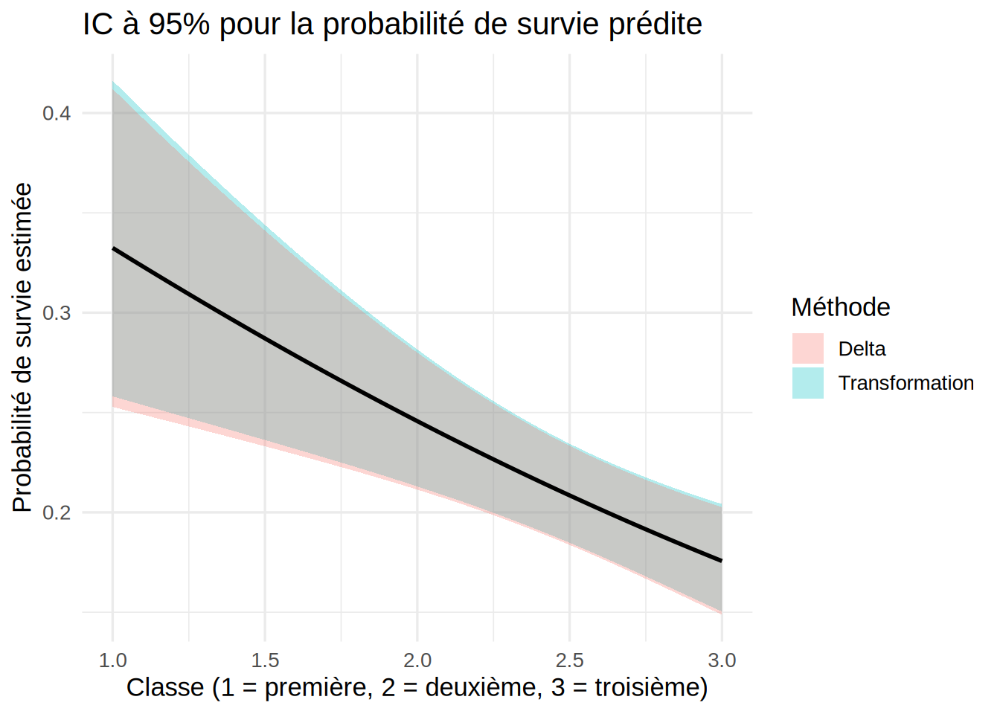
Les deux bandes de confiance se superposent presque sur toute la plage de classe_num : avec un échantillon de cette taille et un effet modéré, le choix de la méthode importe peu. Notez que la borne inférieure de l’IC delta descend jusqu’à environ \(0{,}149\) en troisième classe (classe_num = 3) sans devenir négative, mais rien ne le garantit en général. L’IC par transformation reste dans \([0,1]\) par construction, alors que l’IC delta peut en sortir avec d’autres données ou d’autres valeurs de \(\boldsymbol{X}^*\).
Le cas du lien logit — Méthode du delta
Avec le lien logit, \(g^{-1}(u) = \dfrac{e^u}{1+e^u}\), dont la dérivée est
\[ \frac{\partial g^{-1}(u)}{\partial u} = \frac{e^u}{(1+e^u)^2} = g^{-1}(u)\left\{1-g^{-1}(u)\right\}. \]
Ainsi, \(h(u) = \left[g^{-1}(u)\{1-g^{-1}(u)\}\right]^2\) et, en \(u = {\boldsymbol{X}^*}^\top\hb\), \(h({\boldsymbol{X}^*}^\top\hb) = \left[\hat\pi^*(1-\hat\pi^*)\right]^2\). La méthode du delta donne
\[ \hv{\hat\pi^*} = \left[\hat\pi^*(1-\hat\pi^*)\right]^2 \hv{{\boldsymbol{X}^*}^\top\hb}. \]
Pour aller plus loin avec la théorie — Idée de la méthode du delta
La loi asymptotique de \(\hat\theta = {\boldsymbol{X}^*}^\top\hb\) est connue : \(\hat\theta \overset{\cdot}{\sim} \mathcal{N}(\theta,\, \hv{\hat\theta})\). Par contre, la loi recherchée est celle de \(\hat\pi^* = g^{-1}(\hat\theta)\), une transformation non linéaire de \(\hat\theta\), et ni la normalité asymptotique ni la variance ne traversent telles quelles une transformation non linéaire.
La méthode du delta remplace \(g^{-1}\) par sa tangente autour de \(\theta\) (développement de Taylor au premier ordre) : \[ g^{-1}(\hat\theta) \approx g^{-1}(\theta) + \left.\frac{\partial g^{-1}(u)}{\partial u}\right|_{u=\theta} (\hat\theta - \theta). \] Comme \(g^{-1}(\theta) = \pi^*\) est une constante et que le second terme est linéaire en \(\hat\theta\), la variance se calcule directement : \[ Var[\hat\pi^*] \approx \left[\left.\frac{\partial g^{-1}(u)}{\partial u}\right|_{u=\theta}\right]^2 Var[\hat\theta], \] estimée en substituant \(\hat\theta\) à \(\theta\) (d’où \(\hv{\hat\pi^*} = h({\boldsymbol{X}^*}^\top\hb)\,\hv{{\boldsymbol{X}^*}^\top\hb}\), où \(h(u) = \{\partial g^{-1}(u)/\partial u\}^2\)).
Contrairement à la première approche (transformer les bornes de l’IC sur \(\eta^*\)), cette méthode approche directement la variance de \(\hat\pi^*\) sur son échelle naturelle. Comme elle repose sur une approximation linéaire locale, rien ne garantit que l’intervalle obtenu reste dans \([0,1]\).
Remarque — Prédictions et comparaisons avec marginaleffects
La librairie marginaleffects (Arel-Bundock et al., s. d.) fait ces calculs pour la plupart des modèles du livre. Pour un GLM, predictions construit par défaut l’intervalle sur l’échelle du prédicteur linéaire, puis transforme ses bornes, comme la première approche. La fonction avg_comparisons donne l’effet moyen d’une variable sur la probabilité elle-même, avec son intervalle de confiance (méthode du delta).
library(marginaleffects)
# Probabilités de survie prédites et IC à 95 % pour les trois classes
predictions(modele_agrege_classe_logit, newdata = datagrid(classe_num = 1:3)) |>
as.data.frame() |>
dplyr::select(classe_num, estimate, conf.low, conf.high) classe_num estimate conf.low conf.high
1 1 0.3324252 0.2580674 0.4161895
2 2 0.2456839 0.2129957 0.2815937
3 3 0.1756220 0.1503012 0.2041835# Variation moyenne de la probabilité de survie pour une classe de plus
avg_comparisons(modele_agrege_classe_logit, variables = "classe_num") |>
as.data.frame() |>
dplyr::select(term, contrast, estimate, conf.low, conf.high) term contrast estimate conf.low conf.high
1 classe_num +1 -0.06852344 -0.1033115 -0.03373537Pour la deuxième classe, l’intervalle est celui obtenu plus haut par transformation des bornes. Passer à la classe suivante diminue la probabilité de survie d’environ 6,9 points de pourcentage en moyenne. Contrairement au rapport de cotes \(e^{\hat\beta_1}\), cette quantité s’exprime directement sur l’échelle des probabilités.
2.3 Sélection de modèles
2.3.1 Déviance
Pour juger si un modèle à \(p+1\) paramètres \(\boldsymbol\beta\) s’ajuste bien aux données, on le compare au modèle le plus flexible possible, qui donne à chaque observation son propre paramètre, sans structure imposée par les variables explicatives.
Définition — Modèle saturé
Le modèle saturé a \(n\) paramètres \(\{\tilde\mu_1,\ldots,\tilde\mu_n\}\) (un par observation, plutôt que \(p+1\) pour tout l’échantillon).
On voit facilement que le modèle saturé maximise la log-vraisemblance \[ \ell(\tilde\mu_1,\ldots,\tilde\mu_n; \boldsymbol{y}) = \sum_{i=1}^n \left\{ y_i \log(\tilde\mu_i) + (m_i - y_i)\log(m_i - \tilde\mu_i) \right\} + K, \]
en \(\{\tilde\mu_1,\ldots,\tilde\mu_n\}= \{y_1,\ldots,y_n\}\), c’est-à-dire quand chaque paramètre est ajusté exactement sur l’observation correspondante. Le modèle saturé est l’ajustement parfait : il reproduit les données sans aucun résidu, mais il n’a aucune valeur prédictive ou explicative, parce qu’il ne fait que mémoriser les observations. Il sert seulement de référence, à laquelle on compare un modèle plus parcimonieux (avec \(p+1 \ll n\) paramètres) pour mesurer ce qui reste à expliquer.
En notant \(\tilde{\boldsymbol{\mu}}=(\tilde\mu_1,\ldots,\tilde\mu_n)^\top\) et \(\hat{\boldsymbol{\mu}}=(\hat\mu_1,\ldots,\hat\mu_n)^\top\), la statistique du rapport de vraisemblance entre le modèle saturé et le modèle considéré est
\[\Lambda=\frac{L(\tilde{\boldsymbol{\mu}}; \boldsymbol y)}{L(\hat{\boldsymbol{\mu}}; \boldsymbol y)} =\frac{L(\boldsymbol{y}; \boldsymbol y)}{L(\hat{\boldsymbol{\mu}}; \boldsymbol y)}.\]
Définition — Déviance
La déviance \(D\) est deux fois le log de ce rapport :
\[D =2\left\{\ell(\boldsymbol y;\boldsymbol y) - \ell(\hat{\boldsymbol\mu};\boldsymbol y)\right\} = 2\sum_{i=1}^n\left\{y_i\log\!\left(\frac{y_i}{\hmu{i}}\right) + (m_i - y_i)\log\!\left(\frac{m_i - y_i}{m_i - \hmu{i}}\right)\right\} = \sum_{i=1}^n d_i,\]
avec la convention \(0\log 0 = 0\) quand \(y_i=0\) ou \(y_i=m_i\).
\(D\) est la déviance du modèle et \(d_i\) la déviance individuelle de l’observation \(i\). Chaque \(d_i\) mesure l’écart entre l’ajustement parfait \(y_i\) et l’ajustement \(\hmu{i}\) du modèle.
Remarque
Le facteur \(2\) dans la déviance sert à obtenir
\[D \xrightarrow{d} \chi_{n-(p+1)}^2 \qquad \text{lorsque } m_i\to \infty,\]
c’est-à-dire que, si le modèle est bien spécifié, la déviance tend en loi vers un khi-deux à \(n-(p+1)\) degrés de liberté quand les \(m_i\) tendent vers l’infini (\(n\) restant fixé).
\(\xrightarrow{d}\)
La flèche \(\xrightarrow{d}\) indique une convergence en distribution (ou en loi). La loi de la quantité à gauche (ici \(D\)) se rapproche de celle indiquée à droite (ici \(\chi^2_{n-(p+1)}\)) quand le paramètre asymptotique (ici \(m_i\)) tend vers l’infini. Cela ne veut pas dire que \(D\) elle-même converge vers une valeur. C’est aussi une convergence en loi qui justifie la notation \(\overset{\cdot}{\sim}\) utilisée plus haut pour \(\hb\), mais quand \(n\to\infty\) et non quand \(m_i\to\infty\).Quand les \(m_i\) sont finis mais assez grands (par exemple \(m_i\hpi{i}\) et \(m_i(1-\hpi{i})\) d’au moins 5 environ), on utilise
\[D \;\overset{\cdot}{\sim}\; \chi_{n-(p+1)}^2\]
comme approximation, si le modèle est bien spécifié. Avec de petits \(m_i\), cette approximation n’est pas fiable, même si \(n\) est grand.
Propriété — Non-négativité de la déviance
Le modèle saturé maximise la vraisemblance parmi tous les modèles possibles, de sorte que \(\ell(\boldsymbol y;\boldsymbol y) \geq \ell(\hat{\boldsymbol\mu};\boldsymbol y)\) dans tous les cas, d’où \(D \geq 0\). Plus \(D\) est petit, plus le modèle se rapproche du modèle saturé, donc mieux il s’ajuste aux données.
La déviance joue le rôle de la somme des carrés des résidus en régression linéaire. Elle sert à évaluer l’adéquation du modèle et à comparer des modèles.
2.3.2 Comparaison de modèles emboîtés
Considérons deux modèles emboîtés (définition au chapitre 0), et notons \(D_{\text{complet}}\) la déviance du modèle complet et \(D_{\text{réduit}}\) celle du modèle réduit. La statistique du rapport de vraisemblance \(G^2 = D_{\text{réduit}} - D_{\text{complet}}\) sert à les comparer.
Propriété — Distribution asymptotique de \(G^2 = D_{\text{réduit}}-D_{\text{complet}}\)
Sous \(H_0\) (le modèle réduit suffit), \(G^2\) suit approximativement (asymptotiquement, quand \(n\to\infty\)) une loi du khi-deux à \(d\) degrés de liberté, où \(d\) est la différence du nombre de paramètres :
\[ G^2 \;\overset{\cdot}{\sim}\; \chi^2_d. \]
Contrairement à l’approximation de la loi de \(D\) elle-même, ce résultat reste valable quand les \(m_i\) sont petits (y compris \(m_i=1\)).
Exemple — Ajout du sexe et du groupe d’âge dans l’exemple empress_agrege
On teste \(H_0: \beta_{\text{sexe}} = \beta_{\text{âge}} = 0\), où \(\beta_{\text{âge}}\) est le coefficient de groupe_age (modèle avec classe_num seulement contre modèle avec sexe et groupe_age en plus) :
modele_agrege_reduit <- glm(
cbind(survivants, effectif - survivants) ~ classe_num,
data = empress_agrege,
family = binomial
)
modele_agrege_complet <- glm(
cbind(survivants, effectif - survivants) ~ classe_num + sexe + groupe_age,
data = empress_agrege,
family = binomial
)
stat.test <- deviance(modele_agrege_reduit) - deviance(modele_agrege_complet)
ddl.test <- df.residual(modele_agrege_reduit) - df.residual(modele_agrege_complet)
valeurp <- pchisq(stat.test, df = ddl.test, lower.tail = FALSE)
valeurp[1] 2.8459e-16Comme la valeur-p \(\approx 2{,}85\times10^{-16}\) est bien sous le seuil de 5%, on rejette \(H_0\) : le sexe et le groupe d’âge apportent une information que la classe seule ne capture pas. Les coefficients de ce modèle apparaissent plus loin, dans le tableau de l’exemple de diagnostics, et l’effet du sexe y va à l’encontre de l’idée reçue « les femmes et les enfants d’abord ». Ce n’est pas étonnant pour un navire qui a coulé en moins de 15 minutes, sans le temps d’une évacuation ordonnée.
2.3.3 Comparaison de modèles non emboîtés : AIC et BIC
Comme pour le modèle linéaire, on utilise \[AIC = -2\,\ell(\hat{\boldsymbol\mu};\boldsymbol y) + 2(p+1), \qquad BIC = -2\,\ell(\hat{\boldsymbol\mu};\boldsymbol y) + \log(n)(p+1).\] On préfère le modèle qui a le plus petit \(AIC\) (ou \(BIC\)). En R, ces critères se calculent avec AIC(modele) et AIC(modele, k=log(n)).
Exemple — Modèles non emboîtés avec empress_individus
Comparons deux modèles qui ne sont pas emboîtés l’un dans l’autre : classe + sexe et classe + groupe_age.
modele_indiv_classe_sexe <- glm(survecu ~ classe + sexe, data = empress_individus, family = binomial)
modele_indiv_classe_age <- glm(survecu ~ classe + groupe_age, data = empress_individus, family = binomial)
AIC(modele_indiv_classe_sexe)[1] 1022.129AIC(modele_indiv_classe_age)[1] 1021.349Le modèle 2 (classe + groupe_age) a un AIC un peu plus faible que le modèle 1 (classe + sexe) et serait donc préféré, mais l’écart est mince (moins d’un point). C’est probablement le signe qu’aucun des deux n’est satisfaisant, chacun omettant une variable importante, comme le confirme la sélection automatique ci-dessous.
2.3.4 Sélection automatique
Les méthodes pas à pas forward, backward et stepwise fonctionnent comme pour le modèle linéaire (fonction step avec l’argument direction).
Exemple — Sélection automatique sur le jeu de données empress_individus
On applique les trois méthodes au modèle additif à trois variables.
# Modèle complet : effets additifs des trois variables explicatives disponibles
modele_indiv_complet <- glm(survecu ~ classe + sexe + groupe_age,
data = empress_individus, family = binomial)
# Backward : part du modèle complet, retire des termes
modele_indiv_backward <- step(modele_indiv_complet, direction = "backward")Start: AIC=993.66
survecu ~ classe + sexe + groupe_age
Df Deviance AIC
<none> 983.66 993.66
- classe 2 1005.84 1011.84
- sexe 1 1013.35 1021.35
- groupe_age 1 1014.13 1022.13# Forward : part du modèle vide, ajoute des termes tant que l'AIC diminue
# (au plus jusqu'au modèle complet)
modele_indiv_vide <- glm(survecu ~ 1, data = empress_individus, family = binomial)
modele_indiv_forward <- step(modele_indiv_vide, direction = "forward",
scope = formula(modele_indiv_complet))Start: AIC=1075.19
survecu ~ 1
Df Deviance AIC
+ groupe_age 1 1031.3 1035.3
+ sexe 1 1040.9 1044.9
+ classe 2 1051.6 1057.6
<none> 1073.2 1075.2
Step: AIC=1035.32
survecu ~ groupe_age
Df Deviance AIC
+ sexe 1 1005.8 1011.8
+ classe 2 1013.4 1021.4
<none> 1031.3 1035.3
Step: AIC=1011.84
survecu ~ groupe_age + sexe
Df Deviance AIC
+ classe 2 983.66 993.66
<none> 1005.84 1011.84
Step: AIC=993.66
survecu ~ groupe_age + sexe + classe# Stepwise : part du modèle complet, ajoute et retire au besoin
modele_indiv_final <- step(modele_indiv_complet, direction = "both")Start: AIC=993.66
survecu ~ classe + sexe + groupe_age
Df Deviance AIC
<none> 983.66 993.66
- classe 2 1005.84 1011.84
- sexe 1 1013.35 1021.35
- groupe_age 1 1014.13 1022.13# Termes retenus et AIC du modèle choisi par chacune des trois méthodes
selection <- list(backward = modele_indiv_backward, forward = modele_indiv_forward,
stepwise = modele_indiv_final)
t(sapply(selection, function(m)
c(termes = paste(sort(attr(terms(m), "term.labels")), collapse = " + "),
AIC = format(round(AIC(m), 2))))) termes AIC
backward "classe + groupe_age + sexe" "993.66"
forward "classe + groupe_age + sexe" "993.66"
stepwise "classe + groupe_age + sexe" "993.66"summary(modele_indiv_final)$coefficients Estimate Std. Error z value Pr(>|z|)
(Intercept) -1.8870253 0.2084659 -9.051960 1.404254e-19
classePremière 1.0070485 0.2808246 3.586040 3.357369e-04
classeTroisième -0.2009025 0.1954994 -1.027637 3.041205e-01
sexeHomme 0.9890825 0.1919365 5.153175 2.561127e-07
groupe_ageEnfant -2.0826480 0.5160819 -4.035499 5.448642e-05Les trois méthodes aboutissent ici au même modèle final (classe + sexe + groupe_age), ce qui n’est pas toujours le cas. Chacune ne parcourt qu’un chemin parmi tous les sous-modèles possibles (une variable ajoutée ou retirée à la fois), de sorte que rien ne garantit qu’elles arrivent au même optimum local, encore moins à l’optimum global. Les trois variables sont conservées, parce qu’en retirer une fait augmenter l’AIC.
Notez que les coefficients du modèle final ne sont pas tous significatifs au seuil de 5%. La modalité de référence de classe est « Deuxième » (R prend la première par ordre alphabétique), de sorte que classeTroisième compare la troisième classe à la deuxième, et classePremière la première à la deuxième. La valeur-p de classeTroisième est d’environ \(0{,}30\), bien au-dessus de \(0{,}05\), de sorte qu’on ne rejette pas \(H_0:\beta_{\text{classeTroisième}}=0\). À l’inverse, classePremière (valeur-p \(\approx 3{,}36\times10^{-4}\)), sexeHomme (valeur-p \(\approx 2{,}56\times10^{-7}\)) et groupe_ageEnfant (valeur-p \(\approx 5{,}45\times10^{-5}\)) sont significatifs. La variable classe reste quand même dans le modèle. Ce qui décide de son retrait, c’est la variation de l’AIC quand on retire le facteur en entier (ses deux indicatrices à la fois), ici de 993,66 à 1011,84, et non la significativité d’un seul de ses coefficients. Ce critère n’est pas un test au seuil de 5% : retirer un terme à \(d\) paramètres fait baisser l’AIC exactement quand \(G^2 < 2d\), ce qui revient à un test du rapport de vraisemblance à un seuil implicite d’environ \(0{,}157\) pour \(d=1\) et \(0{,}135\) pour \(d=2\).
2.4 Validation et diagnostic de modèles
2.4.1 Résidus
En régression binomiale, on utilise deux types de résidus.
Définition — Résidus de déviance et résidus de Pearson
Résidus de déviance : \(r_{D,i} = \mathrm{signe}(y_i - \hmu{i})\sqrt{d_i}\), avec \(d_i\) la déviance individuelle de l’observation \(i\) ;
résidus de Pearson : \[r_{P,i} = \frac{y_i - m_i\hpi{i}}{\sqrt{m_i\hpi{i}(1-\hpi{i})}} = \frac{y_i - \hmu{i}}{\sqrt{\hmu{i}(m_i-\hmu{i})/m_i}}.\]
2.4.2 Tests d’adéquation globale
L’adéquation globale du modèle se teste avec deux statistiques : la déviance \(D\) et le khi-deux de Pearson \[X^2_P = \sum_{i=1}^n r_{P,i}^2 = \sum_{i=1}^n \frac{m_i(y_i - \hmu{i})^2}{\hmu{i}(m_i - \hmu{i})}.\]
Propriété — Convergence de \(D\) et \(X^2_P\)
Quand tous les \(m_i \to \infty\) (\(n\) restant fixé), \(D\) et \(X^2_P\) convergent en loi vers une \(\chi^2_{n-(p+1)}\) si le modèle est bien spécifié.
L’hypothèse nulle du test est que le modèle est adéquat, de sorte qu’une petite valeur-p mène à rejeter le modèle.
Exemple — Test d’adéquation avec l’exemple empress_agrege
Reprenons le modèle modele_agrege_classe_logit ajusté plus haut, avec classe_num comme seule variable explicative :
# Déviance
D <- deviance(modele_agrege_classe_logit)
ddl <- df.residual(modele_agrege_classe_logit)
p.deviance <- pchisq(D, df = ddl, lower.tail = FALSE)
# Khi-deux de Pearson
chi2.pearson <- sum(residuals(modele_agrege_classe_logit, type = "pearson")^2)
p.pearson <- pchisq(chi2.pearson, df = ddl, lower.tail = FALSE)
data.frame(
Statistique = c("Déviance", "Khi-deux de Pearson"),
Valeur = c(D, chi2.pearson),
ddl = ddl,
p.valeur = c(p.deviance, p.pearson)
) Statistique Valeur ddl p.valeur
1 Déviance 84.93991 9 1.677178e-14
2 Khi-deux de Pearson 68.66520 9 2.780196e-11Les deux valeurs-p (environ \(1{,}68\times10^{-14}\) pour la déviance et \(2{,}78\times10^{-11}\) pour le khi-deux de Pearson) sont bien sous le seuil de 5%. On rejette donc l’adéquation du modèle : la classe seule ne suffit pas à expliquer la survie. C’est cohérent avec le test emboîté vu plus haut, où le sexe et le groupe d’âge apportaient une information essentielle.
Remarque — Déviance ou khi-deux de Pearson?
\(D\) et \(X^2_P\) convergent tous deux vers une loi \(\chi^2_{n-(p+1)}\) quand les \(m_i \to \infty\), mais ils se comportent différemment en échantillon fini. En général, la statistique de Pearson respecte mieux cette approximation que la déviance, surtout quand les \(m_i\) sont petits ou modérés (McCullagh et Nelder 1989; Agresti 2013).
Avec des données individuelles (Bernoulli, \(m_i=1\)), on est dans le cas extrême où les deux tests sont inutilisables. En effet, un des deux termes de \(d_i\) s’annule toujours (par la convention \(0\log 0=0\)), de sorte que
\[ d_i = -2\left[y_i\log(\hmu{i}) + (1-y_i)\log(1-\hmu{i})\right]. \]
De plus, la log-vraisemblance du modèle saturé vaut alors exactement 0, comme \(\tilde\mu_i = y_i \in \{0,1\}\) annule \(y_i\log(y_i)+(1-y_i)\log(1-y_i)\) par la même convention. La déviance se réduit donc à
\[ D = \sum_{i=1}^n d_i = -2\,\ell(\hat{\boldsymbol\mu};\boldsymbol y), \]
c’est-à-dire une simple transformation de la vraisemblance du modèle, sans point de comparaison, de sorte qu’elle perd son interprétation comme test d’adéquation. \(X^2_P\), lui, reste au moins défini dans ce cas, même si son approximation \(\chi^2\) n’est pas fiable non plus.
Quand les deux statistiques mènent à la même conclusion (avec des \(m_i\) raisonnablement grands), peu importe laquelle on rapporte. Il ne faut pas voir un désaccord marqué entre les deux valeurs-p comme le signe que l’un des deux tests est le bon. C’est plutôt l’approximation asymptotique commune aux deux tests qui devient peu fiable.
Remarquez que cette distinction ne concerne que le test d’adéquation globale d’un seul modèle. Pour comparer des modèles emboîtés, la déviance garde un avantage clair. Sous \(H_0\), les différences de déviances \(G^2\) suivent approximativement une loi \(\chi^2\) dès que \(n\) est grand (le nombre de paramètres restant fixé), même quand les \(m_i\) sont petits (y compris \(m_i=1\)), ce qui n’est pas le cas des différences de statistiques de Pearson.
2.4.3 Adéquation avec des données individuelles
Avec des données de Bernoulli (\(m_i = 1\)), ni \(D\) ni \(X^2_P\) ne permettent de tester l’adéquation (voir la remarque précédente). Trois outils regroupent alors les observations selon leur probabilité prédite, pour retrouver des effectifs assez grands dans chaque groupe.
Définition — Test de Hosmer-Lemeshow
On classe les observations en \(G\) groupes de tailles à peu près égales selon les probabilités prédites \(\hpi{i}\) (souvent \(G = 10\), les déciles). Dans le groupe \(g\), de taille \(n_g\), notons \(O_g\) le nombre observé de succès et \(E_g = \sum_{i\in g}\hpi{i}\) le nombre prédit. La statistique
\[ C = \sum_{g=1}^{G}\frac{(O_g - E_g)^2}{E_g\,(1 - E_g/n_g)} \]
suit approximativement une loi \(\chi^2_{G-2}\) si le modèle est bien spécifié (Hosmer et al. 2013).
Le test a des limites. Le résultat dépend du nombre de groupes, la puissance est faible avec un petit échantillon, et un modèle qui n’a que quelques combinaisons distinctes de variables explicatives (comme ceux d’empress_individus, qui en ont au plus 11) crée des ex æquo dans les \(\hpi{i}\). Dans ce dernier cas, il vaut mieux agréger les données et revenir au test de la Section 2.4.2. Le test est offert par la fonction hoslem.test de la librairie ResourceSelection, mais il se programme en quelques lignes.
Deux graphiques complètent le test :
- résidus groupés (binned residuals) : pour chaque groupe, la moyenne des résidus bruts \(y_i - \hpi{i}\) en fonction de la probabilité prédite moyenne, avec une bande de \(\pm 2\) erreurs-types, \(\pm 2\sqrt{\bar\pi_g(1-\bar\pi_g)/n_g}\). Si le modèle est bien spécifié, environ 95 % des points tombent dans la bande, sans tendance. La fonction
binnedplotde la librairiearmtrace ce graphique (Gelman et Hill 2007) ; - courbe de calibration : la proportion observée de succès de chaque groupe en fonction de la probabilité prédite moyenne, qui devrait suivre la droite identité. Une probabilité prédite de \(0{,}3\) doit correspondre à environ 30 % de succès. Notez qu’un modèle logistique ajusté par maximum de vraisemblance est toujours bien calibré en moyenne sur ses propres données d’entraînement. La calibration s’évalue donc surtout sur des données test (voir le Chapitre 5).
Exemple — Adéquation sur des données simulées
On simule \(n = 500\) observations dont la vraie relation est quadratique sur l’échelle logit, \(\mathrm{logit}\,\pi(x) = -1{,}5 + 0{,}5\,x^2\), puis on ajuste deux modèles : l’un linéaire en \(x\) (mal spécifié), l’autre quadratique.
set.seed(4300)
n_sim <- 500
sim_adeq <- tibble(x = runif(n_sim, -3, 3)) |>
mutate(y = rbinom(n_sim, 1, plogis(-1.5 + 0.5 * x^2)))
m_lin <- glm(y ~ x, family = binomial, data = sim_adeq)
m_quad <- glm(y ~ x + I(x^2), family = binomial, data = sim_adeq)
# Test de Hosmer-Lemeshow avec G groupes formés selon les probabilités prédites
hosmer_lemeshow <- function(modele, G = 10) {
tibble(y = modele$y, p = fitted(modele)) |>
mutate(groupe = ntile(p, G)) |>
group_by(groupe) |>
summarise(n = n(), O = sum(y), E = sum(p), .groups = "drop") |>
summarise(C = sum((O - E)^2 / (E * (1 - E / n)))) |>
mutate(ddl = G - 2, valeur_p = pchisq(C, ddl, lower.tail = FALSE))
}
hl <- bind_rows(lineaire = hosmer_lemeshow(m_lin),
quadratique = hosmer_lemeshow(m_quad), .id = "modele")
hl# A tibble: 2 × 4
modele C ddl valeur_p
<chr> <dbl> <dbl> <dbl>
1 lineaire 155. 8 2.24e-29
2 quadratique 6.24 8 6.20e- 1Le test rejette nettement le modèle linéaire (\(C \approx 154{,}5\) pour 8 degrés de liberté), mais pas le modèle quadratique (valeur-p \(\approx 0{,}62\)). Les résidus groupés montrent la forme de l’écart :
residus_groupes <- function(modele, G = 20) {
tibble(r = modele$y - fitted(modele), p = fitted(modele)) |>
mutate(groupe = ntile(p, G)) |>
group_by(groupe) |>
summarise(p_moy = mean(p), r_moy = mean(r), n = n(), .groups = "drop") |>
mutate(borne = 2 * sqrt(p_moy * (1 - p_moy) / n))
}
bind_rows(`Linéaire en x` = residus_groupes(m_lin),
`Quadratique en x` = residus_groupes(m_quad), .id = "modele") |>
ggplot(aes(p_moy, r_moy)) +
geom_ribbon(aes(ymin = -borne, ymax = borne), fill = "grey85") +
geom_hline(yintercept = 0, linetype = "dashed") +
geom_point() +
facet_wrap(~ modele) +
labs(x = "Probabilité prédite moyenne du groupe", y = "Résidu moyen du groupe") +
theme_minimal(base_size = 13)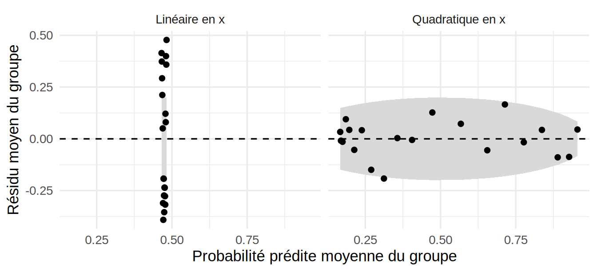
Avec le modèle linéaire, plusieurs groupes sortent de la bande et les résidus moyens suivent une tendance : le modèle sous-estime les probabilités pour certaines valeurs prédites et les surestime pour d’autres. Avec le modèle quadratique, les points restent dans la bande, autour de 0.
2.4.4 Graphiques et surdispersion
Le graphique des résidus en fonction du numéro d’observation ne doit montrer aucune tendance. Si plusieurs résidus dépassent 3 en valeur absolue, on soupçonne de la surdispersion.
Définition — Surdispersion (overdispersion)
La surdispersion (overdispersion) survient quand \(E[Y_i] = m_i\pi_i\) mais \(Var[Y_i] > m_i\pi_i(1-\pi_i)\). Le modèle pose alors \(Var[Y_i] = \phi\, m_i\pi_i(1-\pi_i)\), et \(\phi\) est estimé par \(\tilde\phi_P = X^2_P/(n-(p+1))\).
En cas de surdispersion, il suffit de spécifier family=quasibinomial() au lieu de family=binomial() dans glm.
La linéarité du prédicteur se vérifie avec le nuage de points \(\{(\tilde\pi_i, \hpi{i})\}\) (\(\tilde\pi_i\) en abscisse), où \(\hpi{i} = g^{-1}(\heta{i})\) et \(\tilde\pi_i = y_i/m_i\). Si le modèle est bien spécifié, les points se placent autour de la droite identité (la première bissectrice).
2.4.5 Observations aberrantes et valeurs influentes
Le principe est le même qu’en régression linéaire (chapitre 0). Les définitions des leviers, des résidus standardisés et des résidus studentisés changent, mais leur interprétation reste la même, tout comme celle de la distance de Cook, des DFBETAS et des DFFITS.
Exemple — Diagnostics et surdispersion — données empress_agrege
On reprend le modèle modele_agrege_complet ajusté plus haut (classe_num + sexe + groupe_age) sur les données agrégées pour passer en revue les diagnostics de cette section.
Commençons par les résidus en fonction du numéro d’observation :
res_dev <- residuals(modele_agrege_complet, type = "deviance")
plot(res_dev, xlab = "Numéro d'observation", ylab = "Résidu de déviance",
pch = 19)
abline(h = 0, lty = 2)
abline(h = c(-3, 3), lty = 3, col = "red")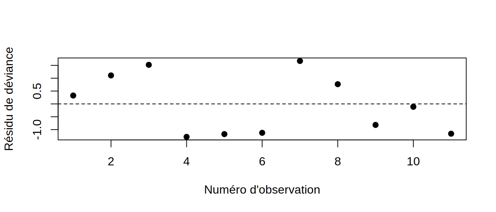
Aucun résidu ne dépasse les seuils à \(\pm 3\) (pointillés rouges), mais plusieurs approchent quand même \(\pm 1{,}5\) pour seulement 11 observations, ce qui reste un signal à vérifier.
Estimons ensuite \(\phi\) et passons au modèle quasibinomial :
chi2_p <- sum(residuals(modele_agrege_complet, type = "pearson")^2)
n <- nrow(empress_agrege)
p1 <- length(coef(modele_agrege_complet)) # nombre de paramètres, soit p+1
phi_hat <- chi2_p / (n - p1)
phi_hat[1] 2.393373modele_agrege_complet_quasi <- glm(cbind(survivants, effectif - survivants) ~ classe_num + sexe + groupe_age,
family = quasibinomial, data = empress_agrege)
# Estimations, erreurs-types et valeurs-p des modèles binomial et quasibinomial
coef_bin <- summary(modele_agrege_complet)$coefficients
coef_quasi <- summary(modele_agrege_complet_quasi)$coefficients
round(cbind(Estimate = coef_bin[, "Estimate"],
"SE binomial" = coef_bin[, "Std. Error"],
"SE quasi" = coef_quasi[, "Std. Error"],
"Pr(>|z|) binom." = coef_bin[, "Pr(>|z|)"],
"Pr(>|t|) quasi" = coef_quasi[, "Pr(>|t|)"]), 4) Estimate SE binomial SE quasi Pr(>|z|) binom. Pr(>|t|) quasi
(Intercept) -0.6517 0.3099 0.4794 0.0355 0.2162
classe_num -0.5034 0.1162 0.1798 0.0000 0.0266
sexeHomme 1.0211 0.1905 0.2947 0.0000 0.0105
groupe_ageEnfant -2.0991 0.5161 0.7985 0.0000 0.0340On obtient \(\tilde\phi_P \approx 2{,}4\), c’est-à-dire une variance observée environ 2,4 fois celle du modèle binomial. Cela pourrait suggérer de la surdispersion, mais il faut lire cette valeur avec prudence. Elle repose sur 11 groupes et 7 degrés de liberté seulement, et elle est gonflée par deux petits groupes d’enfants de sexe féminin (observations 3 et 7, résidus de Pearson d’environ \(2{,}2\) et \(2{,}2\)). Les tests d’adéquation ne concordent d’ailleurs pas : \(X^2_P \approx 16{,}8\) donne une valeur-p \(\approx 0{,}019\), mais la déviance (\(D \approx 13{,}3\)) donne une valeur-p \(\approx 0{,}064\), au-dessus de 5%. Le chapitre sur les GLM modélise les mêmes données par une régression de Poisson et n’y détecte aucune surdispersion (Section 3.6.5). On ajuste quand même le modèle quasibinomial, pour illustrer la démarche et vérifier que les conclusions résistent à des erreurs-types plus grandes. Ce modèle gonfle les erreurs-types d’un facteur \(\sqrt{\tilde\phi_P}\), sans changer les estimations des \(\beta_j\) (et summary() remplace alors le test \(z\) par un test \(t\) à \(n-(p+1)\) degrés de liberté, comme en régression linéaire, d’où la colonne Pr(>|t|)). Malgré ce gonflement, les trois valeurs-p restent sous le seuil de 5% (classe_num : valeur-p \(\approx 0{,}027\) ; sexeHomme : valeur-p \(\approx 0{,}010\) ; groupe_ageEnfant : valeur-p \(\approx 0{,}034\)). Les trois effets restent donc significatifs même si l’on tient compte d’une éventuelle surdispersion.
Vérifions maintenant la linéarité, \(\hat\pi_i\) contre \(\tilde\pi_i\) :
pi_hat <- fitted(modele_agrege_complet_quasi)
pi_tilde <- empress_agrege$survivants / empress_agrege$effectif
plot(pi_tilde, pi_hat, xlab = expression(tilde(pi)[i]),
ylab = expression(hat(pi)[i]), pch = 19,
xlim = c(0, 1), ylim = c(0, 1))
abline(0, 1, lty = 2)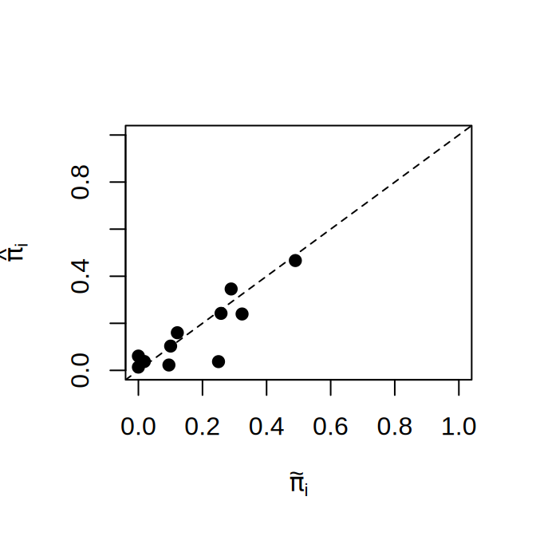
Les points suivent la droite identité dans l’ensemble (corrélation d’environ 0,87), mais la dispersion est notable pour un aussi petit nombre de groupes, surtout pour les petits groupes, dont les proportions observées \(\tilde\pi_i\) sont très variables.
Restent les observations aberrantes et les valeurs influentes :
lev <- hatvalues(modele_agrege_complet_quasi)
rstd <- rstandard(modele_agrege_complet_quasi, type = "pearson")
rstu <- rstudent(modele_agrege_complet_quasi)
cook <- cooks.distance(modele_agrege_complet_quasi)
dfb <- dfbetas(modele_agrege_complet_quasi)
dff <- dffits(modele_agrege_complet_quasi)
plot(lev, cook, xlab = "Levier", ylab = "Distance de Cook", pch = 19)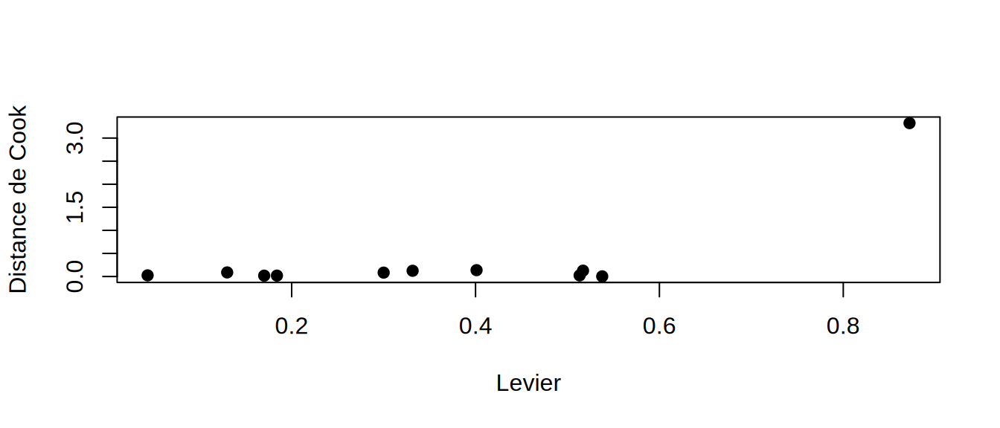
La fonction plot() produit quatre graphiques de diagnostic, réunis ici dans une seule figure.
par(mfrow = c(2, 2))
plot(modele_agrege_complet_quasi, which = 1:4)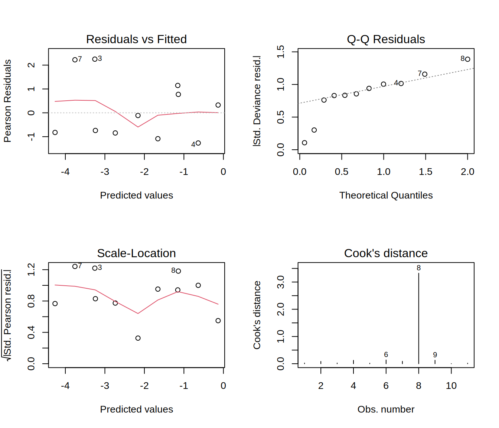
- Résidus contre valeurs ajustées (en haut à gauche) : deux points sont nettement au-dessus des autres (observations 3 et 7, les deux petits groupes d’enfants de sexe féminin déjà repérés) ;
- diagramme quantile-quantile (en haut à droite) : il est ici demi-normal, puisque pour un modèle ajusté avec
glm(), R trace depuis la version 4.3 les valeurs absolues des résidus de déviance standardisés. Il ne montre pas d’écart marqué dans sa partie haute. Les deux plus petits résidus tombent sous la droite, ce qui est peu informatif avec seulement 11 observations ; - scale-location (en bas à gauche) : la dispersion des résidus n’est pas tout à fait constante ;
- distance de Cook (en bas à droite) : une seule observation est influente.
Le seuil usuel pour un levier élevé est \(2(p+1)/n\), soit ici \(2\times 4/11 \approx 0{,}73\). L’observation 8 (troisième classe, hommes adultes) le dépasse, avec un levier de \(0{,}87\) et une distance de Cook de \(3{,}32\), alors que les distances de Cook des autres observations sont loin derrière (toutes sous \(0{,}14\)). Ses DFBETAS (jusqu’à \(1{,}9\) en valeur absolue) et son DFFITS (\(\approx 4{,}0\), contre moins de \(0{,}8\) en valeur absolue ailleurs) confirment qu’elle déplace fortement l’ajustement. Ce n’est pas étonnant : ce groupe compte à lui seul 446 des 1057 passagers (42 %), de sorte que le modèle doit reproduire son taux de survie, sinon la déviance globale explose. C’est un effet de poids d’échantillon, pas une anomalie des données.
2.5 Spécificité, sensibilité et courbe ROC
Avec des données individuelles, l’adéquation est difficile à évaluer (voir la remarque Déviance ou khi-deux de Pearson?), mais la capacité prédictive du modèle peut se mesurer. On ajuste d’abord le modèle et on calcule les probabilités prédites \(\hpi{i} = g^{-1}(\heta{i})\).
On fixe ensuite un seuil \(u \in [0,1]\) (souvent \(u=1/2\)), et chaque observation est classée \(\hat y_i = 1\) si \(\hpi{i} > u\), et \(\hat y_i = 0\) sinon.
Définition — Spécificité et sensibilité
La capacité prédictive se mesure par
\[ \begin{aligned} \text{Spécificité (taux de vrais négatifs) :}\quad & Spec = P(\hat y = 0 \mid y = 0),\\ \text{Sensibilité (taux de vrais positifs) :}\quad & Sens = P(\hat y = 1 \mid y = 1). \end{aligned} \]
À \(u\) fixé, elles s’estiment par \[\widehat{Spec}(u) = \frac{\sum_{i=1}^n \mathbf{1}_{\{(\hpi{i} \le u)\,\&\,(y_i = 0)\}}}{\sum_{i=1}^n \mathbf{1}_{\{y_i = 0\}}}, \qquad \widehat{Sens}(u) = \frac{\sum_{i=1}^n \mathbf{1}_{\{(\hpi{i} > u)\,\&\,(y_i = 1)\}}}{\sum_{i=1}^n \mathbf{1}_{\{y_i = 1\}}}.\]
Définition — Courbe ROC et AUC
La courbe ROC est le tracé des points \(\{(1-\widehat{Spec}(u_b),\, \widehat{Sens}(u_b))\}\) obtenus en faisant varier \(u\) sur une grille \(\{u_1 = 0, u_2, \ldots, u_B = 1\}\). L’aire sous la courbe (AUC) mesure la capacité prédictive. Une AUC de \(0{,}5\) correspond à un classement au hasard (la diagonale), et une AUC de 1 à un classement parfait. À titre indicatif (il s’agit d’une convention, pas d’un résultat, et d’autres auteurs utilisent d’autres seuils et d’autres qualificatifs) : \[\mbox{AUC} \in \begin{cases} [0{,}9,\,1] & \mbox{modèle excellent},\\ [0{,}8,\,0{,}9) & \mbox{modèle bon},\\ [0{,}7,\,0{,}8) & \mbox{modèle moyen},\\ [0{,}6,\,0{,}7) & \mbox{modèle mauvais},\\ [0{,}5,\,0{,}6) & \mbox{modèle très faible},\\ [0,\,0{,}5) & \mbox{pire que le hasard (classement inversé)}. \end{cases}\]
Exemple — Courbe ROC avec l’exemple empress_individus
On reprend modele_indiv_final, le modèle retenu par la sélection automatique (classe + sexe + groupe_age), et on construit la courbe ROC directement à partir des estimateurs \(\widehat{Spec}(u)\) et \(\widehat{Sens}(u)\) ci-dessus :
pi_hat <- fitted(modele_indiv_final)
y <- empress_individus$survecu
seuils <- seq(0, 1, by = 0.01)
sens <- sapply(seuils, function(u) mean(pi_hat[y == 1] > u))
spec <- sapply(seuils, function(u) mean(pi_hat[y == 0] <= u))
roc <- data.frame(seuil = seuils, sensibilite = sens, specificite = spec) |>
arrange(1 - specificite)
ggplot(roc, aes(x = 1 - specificite, y = sensibilite)) +
geom_line(linewidth = 1) +
geom_abline(slope = 1, intercept = 0, linetype = "dashed", color = "grey50") +
labs(x = "1 - Spécificité", y = "Sensibilité", title = "Courbe ROC") +
theme_minimal(base_size = 13)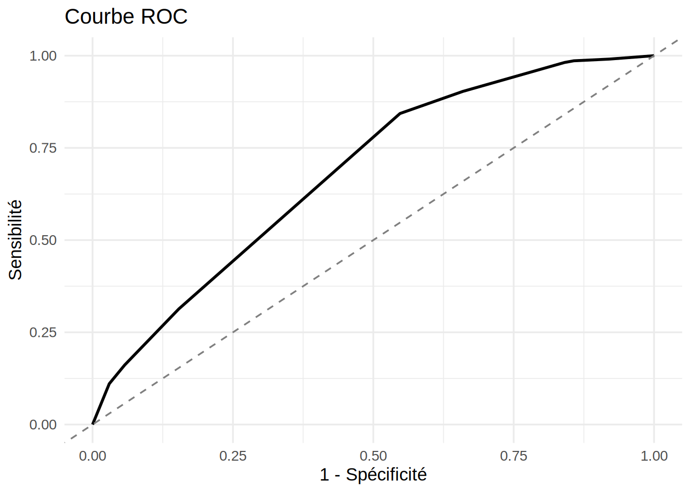
# Aire sous la courbe par la règle du trapèze
auc <- sum(diff(1 - roc$specificite) *
(head(roc$sensibilite, -1) + tail(roc$sensibilite, -1)) / 2)
auc[1] 0.6825598L’aire sous la courbe est d’environ 0,68, de sorte que le modèle est mauvais selon l’échelle ci-dessus. La classe, le sexe et le groupe d’âge influencent la survie (les tests précédents le confirment), mais ils sont loin de suffire pour prédire, passager par passager, qui a survécu. Beaucoup d’autres facteurs (emplacement au moment de l’impact, capacité physique, chance) ont joué.
2.6 Pour aller plus loin
Les exemples précédents s’appuyaient surtout sur empress_agrege et empress_individus (avec quelques données simulées pour la séparation et le phénomène de Hauck-Donner). Cette section reprend quelques-unes de ces analyses sur deux autres jeux de données classiques de régression binaire. Les jeux de données nminer et troutegg, qui illustrent la sélection de modèles avec des données presque séparées et la surdispersion, font plutôt l’objet des exercices appliqués de la fin du chapitre.
Exemple
Voici deux jeux de données tirés de la librairie R GLMsData (Dunn et Smyth 2018) :
quilpie: quantité de pluie mesurée en juillet, de 1921 à 1988, à Quilpie (Australie), une ville semi-aride du Queensland où les précipitations conditionnent l’agriculture. La réponse vaut 1 si la quantité de pluie dépasse 10 mm (un seuil jugé suffisant pour semer) et 0 sinon. La variable explicative est un indice de pression atmosphérique, le Southern Oscillation Index (SOI), qui capte les phases El Niño/La Niña, connues pour influencer les précipitations de la région ;turbines: 11 observations d’une expérience de fiabilité sur des roues de turbine (Nelson 1982). La réponse \(Y_i\) est le nombre de roues fissurées parmi \(m_i\) roues mises à l’essai, en fonction du nombre d’heures de fonctionnement (Hoursest le centre d’une classe de durées : par exemple, 400 correspond à 0 à 800 heures, et la dernière classe, 4400 heures et plus, est codée 4600).
2.6.1 Comparaison des liens avec turbines
Exemple — Jeu de données turbines
On ajuste le modèle avec les trois fonctions de lien, comme pour empress_agrege :
data(turbines)
turbines_obs <- turbines |>
mutate(prop_observee = Fissures / Turbines)
ggplot() +
geom_point(
data = turbines_obs,
aes(x = Hours, y = prop_observee, size = Turbines),
color = "black",
alpha = 0.6
) +
labs(
x = "Heures d'utilisation",
y = "Proportion de roues fissurées",
color = "Fonction de lien",
size = "Nombre de turbines",
title = "Proportion de roues fissurées selon la durée d'utilisation"
) +
theme_minimal(base_size = 13)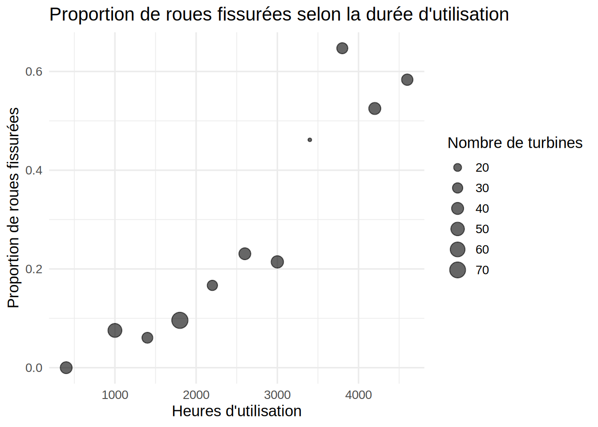
modele.logit.turbines <- glm(
cbind(Fissures, Turbines - Fissures) ~ Hours,
data = turbines,
family = binomial(link = "logit")
)
modele.probit.turbines <- glm(
cbind(Fissures, Turbines - Fissures) ~ Hours,
data = turbines,
family = binomial(link = "probit")
)
modele.cloglog.turbines <- glm(
cbind(Fissures, Turbines - Fissures) ~ Hours,
data = turbines,
family = binomial(link = "cloglog")
)
summary(modele.logit.turbines)$coefficients Estimate Std. Error z value Pr(>|z|)
(Intercept) -3.9235965551 0.3779589447 -10.381013 3.025490e-25
Hours 0.0009992372 0.0001141505 8.753682 2.065015e-18summary(modele.probit.turbines)$coefficients Estimate Std. Error z value Pr(>|z|)
(Intercept) -2.2758074623 1.974187e-01 -11.527823 9.552869e-31
Hours 0.0005783211 6.259715e-05 9.238777 2.493310e-20summary(modele.cloglog.turbines)$coefficients Estimate Std. Error z value Pr(>|z|)
(Intercept) -3.6032798443 3.247391e-01 -11.095923 1.312978e-28
Hours 0.0008104936 9.013218e-05 8.992278 2.421587e-19La colonne Std. Error de summary() donne les erreurs-types estimées des coefficients, comme en régression linéaire.
grille <- data.frame(
Hours = seq(min(turbines$Hours), max(turbines$Hours), length.out = 200)
)
predire_modele <- function(modele, nom_lien) {
grille |>
mutate(
p_hat = predict(modele, newdata = grille, type = "response"),
lien = nom_lien
)
}
predictions <- bind_rows(
predire_modele(modele.logit.turbines, "Logit"),
predire_modele(modele.probit.turbines, "Probit"),
predire_modele(modele.cloglog.turbines, "Cloglog")
)
turbines_obs <- turbines |>
mutate(prop_observee = Fissures / Turbines)
ggplot() +
geom_point(
data = turbines_obs,
aes(x = Hours, y = prop_observee, size = Turbines),
color = "black",
alpha = 0.6
) +
geom_line(
data = predictions,
aes(x = Hours, y = p_hat, color = lien),
linewidth = 1
) +
labs(
x = "Heures d'utilisation",
y = "Probabilité de fissure estimée",
color = "Fonction de lien",
size = "Nombre de turbines",
title = "Comparaison des fonctions de lien logit, probit et cloglog"
) +
theme_minimal(base_size = 13)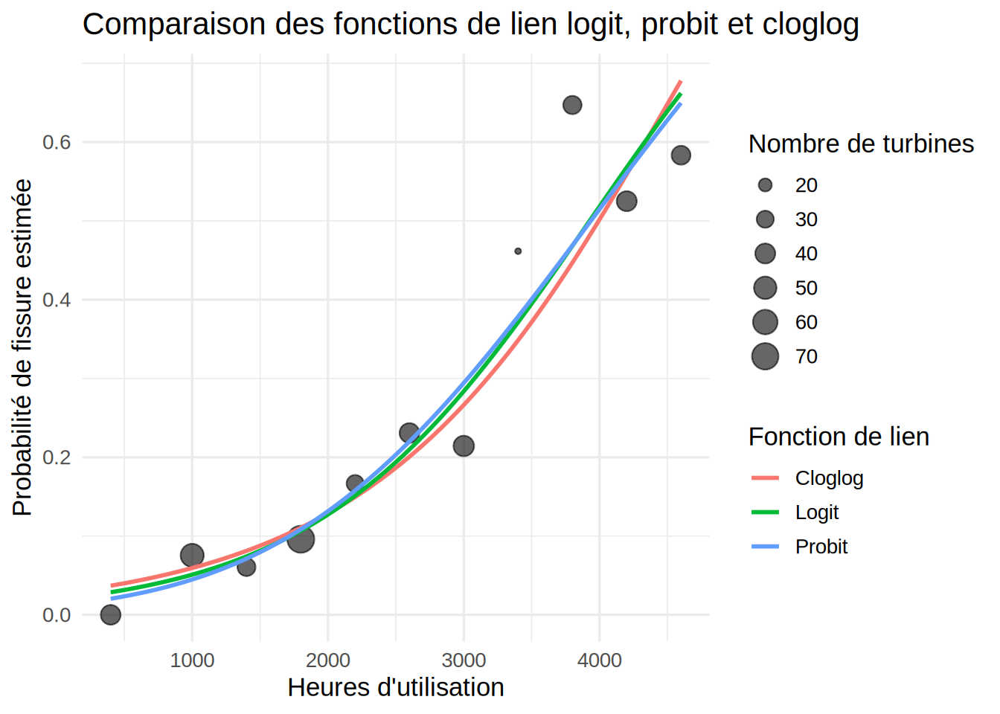
Les trois liens donnent des coefficients significatifs et des courbes \(\hat\pi^*\) presque confondues.
Exemple — Intervalle de confiance pour \(\beta_1\) dans l’exemple turbines
Avec le lien logit, on construit un intervalle de confiance de niveau 95% pour \(\beta_1\) à partir de la sortie de summary() :
summary(modele.logit.turbines)$coefficients Estimate Std. Error z value Pr(>|z|)
(Intercept) -3.9235965551 0.3779589447 -10.381013 3.025490e-25
Hours 0.0009992372 0.0001141505 8.753682 2.065015e-18L’intervalle est \([\hbj{1}-1{,}96\times \sqrt{\hv{\hbj{1}}}\,;\ \hbj{1}+1{,}96\times \sqrt{\hv{\hbj{1}}}]=[0{,}000776\,;\ 0{,}001223]\).
R le calcule aussi directement :
confint(modele.logit.turbines)Waiting for profiling to be done... 2.5 % 97.5 %
(Intercept) -4.704479229 -3.219091395
Hours 0.000783381 0.001231879Notez que les deux intervalles ne sont pas identiques (intervalle de Wald contre intervalle par vraisemblance profilée).
2.6.2 Test emboîté avec turbines
Exemple — Introduction des termes quadratiques et cubiques dans l’exemple turbines
On teste \(H_0: \beta_2 = \beta_3 = 0\), où \(\beta_2\) et \(\beta_3\) sont les coefficients de Hours\(^2\) et de Hours\(^3\) (modèle avec Hours seulement contre modèle avec ces deux termes en plus) :
data(turbines)
modele.reduit.turbines <- glm(
cbind(Fissures, Turbines - Fissures) ~ Hours,
data = turbines,
family = binomial
)
modele.complet.turbines <- glm(
cbind(Fissures, Turbines - Fissures) ~ Hours + I(Hours^2) + I(Hours^3),
data = turbines,
family = binomial
)
stat.test <- deviance(modele.reduit.turbines) - deviance(modele.complet.turbines)
valeurp <- pchisq(stat.test, df = 2, lower.tail = FALSE)
valeurp[1] 0.4767217Comme la valeur-p \(\approx 0{,}48\) dépasse le seuil de 5%, on ne rejette pas \(H_0\) : le modèle réduit suffit.
2.6.3 Test d’adéquation avec turbines
Exemple — Test d’adéquation avec l’exemple turbines
On calcule la déviance et le khi-deux de Pearson du modèle logit avec Hours, puis leurs valeurs-p.
data(turbines)
modele.logit.adeq <- glm(cbind(Fissures, Turbines - Fissures) ~ Hours,
data = turbines, family = binomial(link = "logit"))
# Déviance
D <- deviance(modele.logit.adeq)
ddl <- df.residual(modele.logit.adeq)
p.deviance <- pchisq(D, df = ddl, lower.tail = FALSE)
# Khi-deux de Pearson
chi2.pearson <- sum(residuals(modele.logit.adeq, type = "pearson")^2)
p.pearson <- pchisq(chi2.pearson, df = ddl, lower.tail = FALSE)
data.frame(
Statistique = c("Déviance", "Khi-deux de Pearson"),
Valeur = c(D, chi2.pearson),
ddl = ddl,
p.valeur = c(p.deviance, p.pearson)
) Statistique Valeur ddl p.valeur
1 Déviance 10.331466 9 0.3243236
2 Khi-deux de Pearson 9.250839 9 0.4144493Chacune des deux valeurs de p.valeur ci-dessus se compare au seuil de 5% : si elle est supérieure, on ne rejette pas l’adéquation du modèle, sinon on la rejette à ce seuil. Ici, les deux valeurs-p (environ 0,32 pour la déviance et 0,41 pour le khi-deux de Pearson) dépassent 5%, de sorte qu’on ne rejette pas l’adéquation du modèle. Les \(m_i\) (de 13 à 73 roues) sont assez grands pour que l’approximation \(\chi^2\) soit raisonnable.
2.6.4 Courbe ROC avec quilpie
Exemple — Courbe ROC avec l’exemple quilpie
Ajustons un modèle logistique avec la variable explicative SOI et le lien logit, puis calculons la courbe ROC avec roc.curve() (librairie clinfun) :
data(quilpie)
modele.quilpie <- glm(y ~ SOI, family = binomial, data = quilpie)
courbe.roc <- roc.curve(
marker = as.vector(fitted(modele.quilpie)),
status = quilpie$y,
method = c("empirical")
)
courbe.roc ROC curve with AUC = 0.7835498 and s.e. = 0.05651002 auc.quilpie <- roc.area.test(courbe.roc$marker, courbe.roc$status)$areaL’aire sous la courbe est d’environ 0,78 : le modèle est moyen selon l’échelle de la section sur la courbe ROC.
Remarque — À retenir
- Rapport de cotes : avec le lien logit, une augmentation d’une unité de \(x_{ij}\) (les autres variables restant fixes) multiplie la cote \(o_i = \pi_i/(1-\pi_i)\) par \(e^{\beta_j}\). C’est en bonne partie pour cette interprétation que le logit est le lien le plus utilisé, même si les liens probit et c-log-log donnent souvent des résultats semblables ;
- Séparation : si les covariables séparent parfaitement (ou presque) les deux groupes, l’estimateur du maximum de vraisemblance n’existe pas, et R affiche souvent
glm.fit: fitted probabilities numerically 0 or 1 occurred, avec des coefficients et des erreurs-types énormes. Changer de test ou d’intervalle ne suffit pas, il faut changer d’estimateur (correction de Firth aveclogistf, régularisation) ou de données ; - Tests : des trois tests sur \(\beta_j\) (Wald, score de Rao, rapport de vraisemblance), celui de Wald, affiché par défaut par
summary, devient trompeur avec un effet fort ou des données presque séparées (phénomène de Hauck-Donner). Comparez alors avecanova(modele_reduit, modele_complet, test = "Chisq"), et notez queconfint()donne l’intervalle par vraisemblance profilée,confint.default()celui de Wald ; - Déviance : la différence de déviances \(G^2 = D_{\text{réduit}} - D_{\text{complet}}\) compare des modèles emboîtés même avec \(m_i = 1\), alors que \(D\) et \(X^2_P\) ne testent l’adéquation globale que si les \(m_i\) sont assez grands. Avec des données individuelles, ces deux tests sont inutilisables (d’où le test de Hosmer-Lemeshow et les résidus groupés), et la courbe ROC et l’AUC mesurent plutôt la capacité prédictive ;
- Surdispersion : \(\tilde\phi_P = X^2_P/(n-(p+1))\) estime \(\phi\), et
family = quasibinomialmultiplie les erreurs-types par \(\sqrt{\tilde\phi_P}\) sans changer les estimations des \(\beta_j\), avec un test \(t\) à la place du test \(z\). Lisez \(\tilde\phi_P\) avec prudence quand il repose sur peu de degrés de liberté.
2.7 Exercices
Les exercices sont classés par niveau de difficulté, et les exercices appliqués de la fin demandent d’analyser un jeu de données en R. Leurs solutions sont regroupées dans l’annexe Solutions des exercices ; le lien « Voir la solution » sous chaque énoncé y mène directement.
2.7.1 Niveau facile
Exercice 1. Pour chacune des trois fonctions de lien présentées au Chapitre 2 (logit, probit, c-log-log), vérifiez que \(g^{-1}\) est bien l’inverse de \(g\). Il s’agit de vérifier que \(g\{g^{-1}(\eta)\}=\eta\) pour tout \(\eta \in \mathbb{R}\).
Exercice 2. Avec le lien logit, la cote s’écrit \(o_i = \pi_i/(1-\pi_i) = e^{\eta_i}\). Calculez \(o_i\) et \(\pi_i\) pour \(\eta_i = 0\), \(\eta_i = \log 2\) et \(\eta_i = -\log 3\).
Exercice 3. Soit \(Y_i \sim \mathrm{Bin}(m_i,\pi_i)\), avec \(\mu_i = m_i\pi_i\). Montrez que \[Var[Y_i] = \frac{\mu_i(m_i-\mu_i)}{m_i}\] est maximale, pour \(m_i\) fixé, lorsque \(\pi_i = 1/2\). Quel est le lien avec le poids \(w_i = m_i\pi_i(1-\pi_i)\) utilisé dans l’estimation par IRLS?
2.7.2 Niveau moyen
Exercice 1. En partant de la log-vraisemblance avec lien logit, \[\ell(\boldsymbol{\beta}; \boldsymbol{y}) = \sum_{i=1}^n \left\{ \log\binom{m_i}{y_i} + y_i \eta_i - m_i \log\left(1+e^{\eta_i}\right) \right\}, \qquad \eta_i = \beta_0+\beta_1 x_{i1}+\cdots+\beta_p x_{ip},\] dérivez le score \(\boldsymbol{U}(\boldsymbol{\beta}) = \partial\ell/\partial\boldsymbol{\beta}\) et montrez qu’il s’écrit, sous forme matricielle, \(\boldsymbol{U}(\boldsymbol{\beta}) = \boldsymbol{X}^\top(\boldsymbol{y}-\boldsymbol{\mu})\).
Exercice 2. Dérivez une fois de plus le résultat de l’exercice précédent par rapport à \(\boldsymbol{\beta}\). Montrez que la matrice d’information de Fisher pour le lien logit s’écrit \(I(\boldsymbol{\beta}) = \boldsymbol{X}^\top\boldsymbol{W}\boldsymbol{X}\), où \(\boldsymbol{W} = \mathrm{diag}(w_1,\ldots,w_n)\) et \(w_i = m_i\pi_i(1-\pi_i)\).
Exercice 3. Avec un seul prédicteur continu \(x\) et le lien logit, \(\hat\pi(x) = g^{-1}(\hat\beta_0+\hat\beta_1 x)\). Montrez que \[\hat\pi'(x) = \hat\beta_1\,\hat\pi(x)\{1-\hat\pi(x)\}\] et que, si \(\hat\beta_1>0\), cette pente est maximale au point d’inflexion \(\hat\pi(x)=1/2\), où elle vaut \(\hat\beta_1/4\). Que se passe-t-il si \(\hat\beta_1<0\)?
2.7.3 Niveau difficile
Exercice 1. Montrez que, lorsque les \(m_i\to\infty\), la déviance individuelle \(d_i\) est asymptotiquement équivalente au carré du résidu de Pearson \(r_{P,i}^2\), c’est-à-dire que \[d_i = 2\left\{y_i\log\!\left(\frac{y_i}{\hat\mu_i}\right) + (m_i-y_i)\log\!\left(\frac{m_i-y_i}{m_i-\hat\mu_i}\right)\right\} \approx \frac{(y_i-\hat\mu_i)^2\,m_i}{\hat\mu_i(m_i-\hat\mu_i)} = r_{P,i}^2.\] Déduisez-en que \(D \approx X^2_P\) pour des \(m_i\) grands. (Indice : posez \(\delta = y_i-\hat\mu_i\) et effectuez un développement de Taylor à l’ordre 2 de \(\log(1+\delta/\hat\mu_i)\) et \(\log(1-\delta/(m_i-\hat\mu_i))\) autour de \(\delta=0\).)
Exercice 2. Montrez que, pour deux modèles emboîtés de déviances \(D_{\text{réduit}}\) et \(D_{\text{complet}}\), la différence de déviances \(D_{\text{réduit}}-D_{\text{complet}}\) est exactement égale à la statistique du test du rapport de vraisemblance \[G^2 = -2\left\{\ell(\text{modèle réduit}) - \ell(\text{modèle complet})\right\}.\] Expliquez pourquoi le terme associé au modèle saturé n’apparaît pas dans cette différence, alors qu’il intervient dans la définition de chaque déviance prise individuellement.
Exercice 3. Considérez un modèle logistique à un seul prédicteur \(x\), sans ordonnée à l’origine (\(\eta_i = \beta x_i\)). Supposez qu’il y a séparation complète, au sens où \(y_i=1\) si \(x_i>0\) et \(y_i=0\) si \(x_i<0\) (aucun \(x_i\) n’est nul). Montrez que le score \(U(\beta) = \sum_i (y_i-\pi_i)x_i\) est strictement positif pour toute valeur finie de \(\beta\). Concluez que l’estimateur du maximum de vraisemblance \(\hat\beta\) n’existe pas, c’est-à-dire que \(\ell(\beta)\) n’atteint son supremum qu’à la limite \(\beta\to\infty\).
Exercice 4. Considérez un modèle logistique à un seul prédicteur \(x\) (sans ordonnée à l’origine, données individuelles \(m_i=1\)). Pour ce modèle, l’information de Fisher est \(I(\beta) = \sum_{i=1}^n w_i x_i^2\), avec \(w_i=\pi_i(1-\pi_i)\). Supposez que les données présentent une séparation complète comme à l’exercice précédent. Supposez aussi que l’algorithme d’estimation s’arrête à une valeur \(\hat\beta\) grande mais finie (à cause du critère d’arrêt numérique). Montrez que, pour des \(x_i\neq 0\) fixés, \(w_i\) décroît exponentiellement vite vers \(0\) quand \(\hat\beta\to\infty\). Expliquez ensuite pourquoi la statistique de Wald \(z_{obs} = \hat\beta\sqrt{I(\hat\beta)}\) tend alors vers \(0\) plutôt que vers l’infini (phénomène de Hauck-Donner).
2.7.4 Exercices appliqués
Exercice appliqué 1. Sélection de modèles et données presque séparées. Le jeu de données nminer de la librairie GLMsData (Dunn et Smyth 2018) décrit 31 transects de deux hectares dans des boisés de buloke (un casuarina indigène) des plaines de Wimmera, dans l’ouest de Victoria (Australie). On s’intéresse à la présence du mineur bruyant (Manorina melanocephala), un oiseau indigène agressif qui chasse les espèces plus petites. La variable Minerab donne le nombre de mineurs bruyants observés dans le transect. Les variables explicatives décrivent l’habitat : nombre d’eucalyptus dans le transect (Eucs), superficie en hectares de la parcelle de végétation où se trouve le transect (Area), indicateur de pâturage (Grazed ; selon l’aide de GLMsData, 0 = pâturé et 1 = non pâturé), présence d’arbustes (Shrubs), nombre d’arbres de type buloke (Bulokes) et nombre de morceaux de bois mort au sol (Timber).
Construisez la réponse
Detecte, qui vaut 1 si au moins un mineur bruyant a été observé dans le transect et 0 sinon, et vérifiez qu’elle coïncide avec la variableMinersdu jeu de données. Ajustez les modèles logistiquesDetecte ~ Area + Grazed + Shrubs + TimberetDetecte ~ Eucs + Grazed + Bulokes. Lequel préférez-vous selon l’AIC? Pourquoi ne peut-on pas les comparer par une différence de déviances?Appliquez les sélections backward, forward et stepwise de la fonction
step(), à partir du modèle additif à six variables (ou du modèle vide pour forward). Les trois méthodes retiennent-elles le même modèle? Est-ce garanti en général?Réajustez le modèle retenu et examinez les avertissements de R, les coefficients, leurs erreurs-types et les probabilités ajustées. Quels symptômes décrits à la Section 2.2.2 reconnaissez-vous? Réajustez le modèle avec un critère de convergence plus strict (
control = glm.control(epsilon = 1e-14, maxit = 100)) pour déterminer si l’estimateur du maximum de vraisemblance existe. Croisez enfinDetecteavec l’indicatriceEucs >= 12pour voir d’où vient le problème.Comparez les valeurs-p des tests de Wald de
summary()à celles des tests du rapport de vraisemblance que donnedrop1(..., test = "Chisq"). Expliquez l’écart. Une des variables retenues n’est pas significative au seuil de 5 % : pourquoistep()la garde-t-elle quand même? (Indice : à quel seuil implicite correspond l’AIC pour un terme à un paramètre?)Reprenez la sélection stepwise avec le BIC (argument
k = log(n)destep()). Quel modèle obtenez-vous? Interprétez les rapports de cotes de ce modèle et leurs intervalles de confiance par vraisemblance profilée. Quelles réserves feriez-vous sur ces conclusions?
Exercice appliqué 2. Diagnostics et surdispersion. Le jeu de données troutegg de la librairie faraway (Faraway 2025) compte 20 observations d’une expérience où des boîtes d’œufs de truite ont été enfouies à cinq emplacements d’un cours d’eau (location), puis retirées après quatre durées (period, en semaines), une boîte par combinaison d’emplacement et de durée. La réponse est le nombre d’œufs survivants (survive) parmi les total œufs de la boîte. Les variables location et period sont des facteurs.
Calculez la proportion d’œufs survivants dans chaque boîte et tracez-la en fonction de
period, avec une courbe par emplacement. Décrivez les tendances. Qu’est-ce que ce graphique laisse présager pour un modèle additif enlocationetperiod?Ajustez le modèle logistique binomial
cbind(survive, total - survive) ~ location + period. Tracez les résidus de déviance en fonction du numéro d’observation et repérez ceux qui dépassent 3 en valeur absolue. Les conditions de l’approximation \(\chi^2\) des tests d’adéquation sont-elles réunies? Testez l’adéquation du modèle par la déviance et par le khi-deux de Pearson.Estimez le paramètre de dispersion par \(\tilde\phi_P\) et ajustez le modèle quasibinomial. Comparez, coefficient par coefficient, les erreurs-types et les valeurs-p des deux modèles. Les conclusions changent-elles? Testez ensuite l’effet de chaque facteur pris en entier à l’aide du test \(F\) (
drop1(..., test = "F")).Reprenez les diagnostics du chapitre pour le modèle quasibinomial : graphique de \(\hat\pi_i\) en fonction de \(\tilde\pi_i\), leviers et distances de Cook. Quelles observations se démarquent?
Que représente concrètement le paramètre de dispersion dans cette expérience? Proposez une explication de la surdispersion. Peut-on vérifier si une interaction
location:periodsuffit à l’expliquer?
Références complémentaires
La page Références complémentaires décrit chacun de ces ouvrages.
- Dunn et Smyth (2018). Generalized Linear Models with Examples in R
- Cornillon, Hengartner, Matzner-Løber et Rouvière (2023). Régression avec R
- McCullagh et Nelder (1989). Generalized Linear Models
- Faraway (2016). Extending the Linear Model with R
- Agresti (2013). Categorical Data Analysis
- James, Witten, Hastie et Tibshirani (2021). An Introduction to Statistical Learning: with Applications in R
Agresti, Alan. 2013. Categorical Data Analysis. 3ᵉ éd. Wiley.
Arel-Bundock, Vincent, Noah Greifer, et Andrew Heiss. s. d. marginaleffects: Predictions, Comparisons, Slopes, Marginal Means, and Hypothesis Tests. https://CRAN.R-project.org/package=marginaleffects.
Dunn, Peter K., et Gordon K. Smyth. 2018. Generalized Linear Models with Examples in R. Springer Texts in Statistics. Springer. https://doi.org/10.1007/978-1-4419-0118-7.
Faraway, Julian. 2025. faraway: Functions and Datasets for Books by Julian Faraway. https://CRAN.R-project.org/package=faraway.
Gelman, Andrew, et Jennifer Hill. 2007. Data Analysis Using Regression and Multilevel/Hierarchical Models. Cambridge University Press.
Hauck, Walter W., et Allan Donner. 1977. « Wald’s Test as Applied to Hypotheses in Logit Analysis ». Journal of the American Statistical Association 72 (360): 851‑53. https://doi.org/10.1080/01621459.1977.10479969.
Hosmer, David W., Stanley Lemeshow, et Rodney X. Sturdivant. 2013. Applied Logistic Regression. 3ᵉ éd. Wiley.
McCullagh, Peter, et John A. Nelder. 1989. Generalized Linear Models. 2ᵉ éd. Chapman; Hall.
Nelson, Wayne. 1982. Applied Life Data Analysis. Wiley.